AI & Complex Systems · B2B · Fintech · Enterprise SaaS
Hi, I'm Saravana — a Senior UX Designer with 7+ years of experience specializing in AI-driven user research and design.
I work on digital products for high-profile clients, leveraging AI's analytical and predictive capabilities to deliver innovative, user-centered solutions.
Currently, I'm exploring tools like Claude AI and Figma Make to accelerate application design workflows and enhance prompt-driven design processes.
I Believe
I strongly believe that creative ideas are born in highly collaborative environments. Everything from interacting with users to collaborating with product owners, stakeholders, business analysts and team members is a key part of delivering delightful user experiences.
Eight projects across Fintech, Enterprise SaaS, Automotive, Logistics, Fitness, and AI-assisted product design — each a story of research, collaboration, and the translation of intricate workflows into clear, user-centered design.
A self-serve order page for multi-entity enterprise customers. After signing a contract, they can review what they bought, see exactly when and how much they’ll be charged, and fix failed payments or addresses themselves, without calling their rep.
Role
Senior UX Designer
Industry
Fintech · Enterprise SaaS
Platform
Web Application
Year
2026
At a glance · How it came together
Five moves from “now what?” to “we’re live.”
The process in one picture. Tap any step to jump to its chapter.
Chapter 01 · The problem
Signed,then stranded.
Customers who sign an enterprise contract enter a black box. No self-serve view of what they bought, no clarity on when they'll be charged or go live, and no way to recover from a failed order without a support call. And a sales-led motion that relies on a rep for every question simply doesn't scale.
"I signed Monday. I want it live by Monday afternoon."
CFO · Multi-entity
Contract signed
Aug 10
Details set up
Aug 10
The silence
Now what?
Aug 10 → ?
Order placed
?
Go live
?
01
"What is this page?"
Customers who signed a contract don't expect an "order review" — they read it as a purchase they've already made. "Order" was our word, not the customer's.
02
Two numbers, two dates, no anchor
Amounts read as annual but bill monthly. Totals silently jump once tax lands. "Scheduled for Sep 2" reads as go-live but is actually the charge date.
03
Failures with no "why"
When entities fail, customers see red but not the cause. Bulk-fix is buried, edit-in-place doesn't exist, and next steps route through a support ticket.
Before drawing a single screen, we had to stop guessing — and go watch customers work.
Chapter 02 · How we listened
Follow-Me-Home with 15 profiles.
Multi-entity controllers, accounting managers, CFOs. Framed as "your CFO just forwarded you this email — go." Think-aloud, hands off, two weeks of fieldwork. What they said became the design brief.
Learnings & insights
Language mismatches erode trust.
"Order review" reads as a purchase they haven't made yet. Words like "Scheduled for" and "Copilot" were consistently misinterpreted — as go-live dates and as data-collecting AI respectively. Every label had to be re-tested with customers, not just designers.
The money must be legible before Pay now.
Every participant paused at the hero card to reconcile annual vs monthly, then hunted for tax and credits. No one clicked Pay until the Order Total resolved into a single monthly figure they could match to what they were told during sales.
Recovery is a first-class flow, not an edge case.
Failed payments and address mismatches surfaced in every session. Customers wanted to fix them right on Order Review — not open a ticket, not navigate away. Grouped bulk-edit and inline recovery were validated as must-haves, not nice-to-haves.
The contract is the anchor — keep it in reach.
Controllers repeatedly asked "where's the thing we signed?" — expecting the contract to sit alongside the order, not buried in email. A persistent downloadable contract chip in the hero footer removed a full support-ticket category on its own.
What customers said
'Scheduled for' — I read that as go-live. Like a furniture delivery that could very well call and say sorry.
CONTROLLER · 9 ENTITIES
Order is already signed — why do I need to change the order? And the name Copilot… feels like my data is going somewhere.
VP FINANCE · 7 ENTITIES
The bulk fix, the chat assistant prompts — this is exactly the self-serve I want. Just tell me when the expert reaches out.
CEO · SINGLE-ENTITY
The study, in numbers
15
Participants
2 wks
User interviews
3
Scenarios tested end-to-end
Everything they told us pointed at one page. But that page never stands alone — it inherits everything before it.
Chapter 03 · Setting the stage
Before the Order Review, five things already happened.
We didn't design the full enterprise onboarding — those surfaces already exist. But to understand why Order Review carries such weight, it helps to see what the customer has already done by the time they land here. The sequence below is the pre-work — not our story to tell, but the context that shapes every choice downstream.
01
Contract signed
Master agreement countersigned by the CFO
Signed ✓
02
Company set up
Parent org · fiscal year · tax info
03
Entities added
Each legal entity under the parent org
04
Payment methods
Cards or ACH, per entity or shared
Visa *4477Amex *7744
05
Addresses
Billing + ship-to per entity, validated
You are here06
Order Review
Everything above resolves into one page
Pay now
The customer has already made 5 commitments before Order Review loads. Every design decision on the review page respects that work — nothing is re-asked, nothing is reset, nothing requires them to go back and change what they've already set up elsewhere.
With the context set, three surfaces carry the whole experience: confirm it, recover it, fix it in bulk.
Chapter 04 · The design
Three patterns, three lenses.
Each of the three core surfaces — Scheduled Order Review, Partially-completed Order Review, and Issues to Resolve — is presented through the same three lenses: the actual design, the component hierarchy behind it, and the design principles it answers to.
1
Pattern 01 · The design
Order Review — Scheduled
“
The customer ask that shaped this page
I just want to know when I'll be charged and how much — before I click anything. If I have to go hunt the number down, I'm calling my rep instead.
Verbatim · Controller · 18-entity firm · Follow-me-home study
After you're charged, an implementation consultant will contact you to begin the implementation process.
×
Spark Constructions
Company ID: 934145839208
You will be charged on
Sunday, February 1, 2026
Pay nowSelect another date
First billed amount
$2,400.00 /mo
+ Additional charges
ContractCTR - 9358
Payment split upView details
Order breakdown
Enterprise Suite
Includes 1 Entity, 6 Standard Users, 4 Dimensions, and Bill Pay Elite
$715.00
Additional Entities
13 entities included
$514.00
Workforce Elite
30 seats included
$1,171.00
Order Total
$2,400.00 /mo
+ Applicable charges
These are estimated charges. The actual charges on payment date may contain taxes, credits and prorated amounts. By placing this order you agree to the Terms of Service and Privacy Statement.
123
1
Reads as fact
"You will be charged on…"
A date, not a delivery estimate. Language shifts the mental model from "buying" to "confirming what I already signed."
2
Money legibility
Amount, in the same eyeline.
The /mo figure and "+ Additional charges" sit next to the date — resolves annual/monthly confusion at a glance.
3
Contract with the order
Signed once, referenced always.
Contract chip lives in the hero footer — never buried in email or a support ticket. Downloadable inline.
2
Pattern 01 · Component hierarchy
How the Scheduled page is built
Component tree
App Shell Frame
Top bar Order Portal · chat · settings
Left rail Overview · Users · Details
Page Header Layout
Back link ← Back to company review
Page title Order review
Actions row Chat assistant · Contact support
Info Banner Contextual
Consultant contact message · dismissible
Hero Card — Scheduled variant Primary
Company header name · Company ID · collapse chevron
Charge-date group calendar icon · "You will be charged on" · date · info
Action row Pay now · Select another date
Amount group First billed amount · $/mo · + Additional charges
Footer Contract chip (download) · Payment split up
Order Breakdown Section · collapsible
Header Order breakdown + chevron
Line-item rows Enterprise Suite / Additional Entities / Workforce Elite
Order Total row $/mo + Applicable charges
Fine-print row Terms of Service · Privacy Statement
3
Pattern 01 · Design principles
The commitments behind the Scheduled page
I
Reduce cognitive load
One primary action, always.
"Pay now" is the loudest button on the page. Every other action — Select another date, contact links, breakdown expand — is deliberately quieter. There is never a moment where the customer has to guess what they came here to do.
II
Progressive disclosure
Show less, reveal more.
The info banner is dismissible. The Order breakdown is collapsible. The customer controls what stays on screen and what folds away, so the page stays as short as they want it to be.
III
Match with the real world
Speak the CFO's language.
"You will be charged on" beats "Scheduled for." "First billed amount" beats "MRR." Every label was written with real multi-entity controllers in the room — not by designers alone.
IV
Trust anchors, in place
Fine print, not hidden print.
Terms of Service and Privacy Statement sit at the bottom of the breakdown — inside the money conversation, not tucked into a page footer the customer would have to hunt for.
V
Support alongside AI
Human and AI, same shelf.
Chat assistant and Contact support sit as siblings at the top of the page. Whether the customer prefers an AI diagnosis or a person on the phone — both are one click away, neither is hidden.
1
Pattern 02 · The design
Order Review — Partially completed (with categorized recovery)
“
The customer ask that shaped this page
If something fails, don't make me guess what went wrong or call anyone. Show me what broke, group it so I'm not fixing the same thing ten times, and let me fix it right here.
Verbatim · VP Finance · 7-entity holding · Follow-me-home study
Addresses couldn't be verified for these entities.
Resolve ›
Order breakdown
123
1
Signal, don't shout
Calm "Needs fixes" chip.
Attention without alarm — the badge sits inline with the company name, not as a red-alert page-take-over.
2
Visible at 5 feet
The squint test passes.
A large red-triangle chip + the sentence "Your order is partially completed" — legible from across the room, so the CFO absorbs the state in one glance.
3
Diagnose before you fix
Categorized errors.
Payment (10 issues) + Address (2 issues) as separate cards. The customer sees the shape of the problem before picking one.
2
Pattern 02 · Component hierarchy
How the Partially-completed page is built
Component tree
App Shell Frame
Top bar · Left rail (inherited from Pattern 01)
Page Header Layout
Back link ← Back to company review
Page title Order review
Actions row Chat assistant · Contact support
Hero Card — err variantPrimary · state variant
Company header name + Needs fixes badge + collapse chevron
Status block large red-triangle chip + "Your order is partially completed"
Amount block $2,400 /mo + Applicable charges
Audit footer Contract · Order billed on · Order ID · Payment split up
Needs-fixes Widget Recovery module
Header "Needs fixes (12)" + Resolve all issues
Sub-line "Errors grouped based on categories"
Category card · Payment 10 ISSUES · Resolve ›
Category card · Address 2 ISSUES · Resolve ›
Order Breakdown (collapsed) Section · secondary
Collapsible header only expand-on-demand
Same rows as Scheduled state when expanded
3
Pattern 02 · Design principles
The commitments behind the recovery experience
I
Preserve context
The page doesn't change shape.
Same hero-card silhouette as the Scheduled state — amount, contract chip, order ID and payment split-up stay in the same spots. Recovery is a state variant, not a different page. The customer never loses their bearings.
II
Diagnose before you fix
When something breaks, we diagnose first.
Failed entities never appear as a raw list — they're grouped by root cause (Payment 10 / Address 2) so the customer sees the shape of the problem before touching a "Resolve" button.
III
Error prevention
Cross-category actions, disabled by design.
"Resolve" on the Payment card and "Resolve" on the Address card open different flows. There's no single button that tries to fix both at once, because bulk-fixing two unrelated root causes never leads anywhere good.
IV
Audit trail always visible
Order billed on. Order ID. Payment split-up.
The moment an order enters recovery, the audit fields become more prominent — not less. Finance needs to reference the order ID with support; the customer needs to see when they were billed. Both live in the hero footer permanently.
V
The assistant is a hand, not a driver
AI proposes, humans decide.
Chat assistant stays as a soft pill in the page header — visible, one tap away, never automatic. Every assistant-proposed fix needs an explicit click before money moves.
VI
Language over color
"Needs fixes" — not "Errors."
The badge uses the customer's word (fixable) rather than the system's word (broken). That single choice reframes the recovery flow from "something has gone wrong" to "there's a next step."
1
Pattern 03 · The design
Issues to Resolve — Not every customer wants the assistant. The manual path is just as fast.
“
The customer ask that shaped this page
Ten of these have failed. I don't want to click ten times — isn't there a way to fix them together? Also, AI help is fine, but I don't want it jumping in uninvited.
Verbatim · Accounting Manager · 24-entity firm · Follow-me-home study
6 entities share payment issues. Fix them together if needed.
×
View details
Resolve now
Get chat assistance
1–10 of 10 items‹ Page 1 of 1 ›
123
1
Filter first, act next
Faceted filter panel.
Issue type + Payment method + search — the customer narrows the list before touching a single row. Active filters render as chips ("Issue type: Payment ×") so the current slice is always visible.
2
Bulk-action tooltip
Similar issues, one click.
Select one row and the dark tooltip surfaces "6 entities share payment issues. Fix them together if needed." — Fix all 6 / Fix selected sit side-by-side. Batch and single, both first-class.
3
Manual + assistant coexist
Resolve, split-button dropdown.
Each row's action opens View details · Resolve now · Get chat assistance. Manual is primary; the assistant is one of three options, never the default.
2
Pattern 03 · Component hierarchy
How the entity-list page is built
Component tree
App Shell Frame
Top bar · Left rail (inherited from Pattern 01)
Page Header Layout
Back link ← Back to order review
Page title Issues to resolve
Chat assistant pill opt-in AI
Filter Panel Faceted filter
Panel title "Filter issues by"
Issue type dropdown Payment / Address
Payment method dropdown All / Visa *4477 / Amex *7744
Search input name · ID · 3-char min
Column toggle icon show/hide fields
Active-filter chip "Issue type: Payment ×"
Entity Table Primary content
Header row 7 columns · select-all checkbox
Body row · selectable checkbox · company + ID · address · payment · issue · status · action
Combo split-button Resolve + dropdown caret
Dropdown menu View details · Resolve now · Get chat assistance
Status badge FAILED (pink) / IN PROGRESS / RESOLVED
Bulk-action Tooltip Contextual overlay
Anchored to first selected row
Title "Bulk action · N selected"
Buttons Fix all N · Fix selected · ×
Sub-copy "N entities share payment issues. Fix them together if needed."
Pagination Footer
Item counter "1–10 of 10 items"
Page indicator
3
Pattern 03 · Design principles
The commitments behind the entity-list experience
I
Recognition, not recall
Read the row, act on the row.
Company name + ID, Address, Payment method, Issue type and Status are all visible on the row itself. The customer never has to click into an entity to figure out why it failed — every decision-relevant field is right there.
II
Contextual overlays > modals
The tooltip follows the selection.
Bulk actions surface as a floating dark tooltip anchored to the selected row — not a modal that dims the page. The customer keeps their filter context, sees the row they picked, and acts in place.
III
Progressive disclosure of power
Actions hide until you need them.
Every row shows a plain "Resolve" button by default. The caret reveals View details, Resolve now, and Get chat assistance — power-user options don't clutter the row until the customer asks for them.
IV
Error prevention
You can only combine what belongs together.
Selecting a Payment row disables Address rows in the same view. The interface prevents the customer from mixing root causes into a single bulk fix — the ambiguous state is unreachable, so it can't be an error.
V
Fix ten with one click
Batch as a first-class path.
"Fix all 6" sits equal in weight to "Fix selected." For a controller with 10 identical declines, batching is the correct experience — not a hidden power-user feature buried in a menu.
VI
Assistant alongside, never instead
Manual is primary. The assistant is one of three.
Chat assistant appears as a header pill and as one option inside every row's dropdown. It's always available, never automatic, and never replaces the manual path.
Chapter 05 · From quote to pixel
Every decision started with something a real customer said.
We didn't imagine the pain — we heard it. Below, three of the loudest problems from research and the specific design moves they produced.
×"$28,800 / applicable taxes"
✓"$2,400 /mo · + Applicable charges"
Money reads as monthly, tax lands up front.
The old design showed an annual number and hid the tax jump. We split it into monthly billing with a clickable "applicable charges" modal that shows tax and proration up front.
×"Scheduled for Sep 2"
✓"You will be charged on Feb 1, 2026"
Date says what it does.
Every participant misread "Scheduled for…" as go-live. It's actually the charge date. We rewrote the label as an outright sentence and separated it visually from the implementation timeline.
×"Payment failed" · no reason
✓Grouped root causes + assistant explains
Failures come with a "why."
The old failure list left the customer guessing. We now group failures by root cause (Visa *4477 · 10 entities · reason 51) and hand the diagnosis to the chat assistant — with a source citation from the payment log.
So what actually changes when a CFO opens this page on a Monday morning?
Chapter 06 · The impact
Signed on Monday. Live by Monday afternoon.
The design wasn't a visual refresh. It was a shift in how enterprise customers finish an order — and what the business gains back when they do.
3–7 days → minutes
Recovery in the same session
Payment and address failures used to open a support ticket. Now the customer resolves them inline — the order goes live the same afternoon it was signed.
One page
Everything in the eyeline
Charge date, amount, contract, line items — all legible before Pay now. The customer never has to leave the page to confirm a number or chase a document.
No tickets
Zero support calls to go live
The "where's my contract?" and "when am I being charged?" categories disappear. In-place recovery removes the ticket round-trip for the top-three failure modes.
Grouped fixes
Ten clicks become one
Failures group by root cause — ten identical payment declines surface as one shared problem the customer can bulk-fix in a single action instead of ten.
AI as a hand
The customer stays in charge
Chat assistant diagnoses and proposes — but every money-moving action still needs an explicit click. AI is a safety net, never a surprise action.
Trust by default
Reads as confirmation, not a sell
No cart, no checkout, no re-pitch of what they already signed. The page acknowledges the contract and tells the customer when and how it goes live — nothing more.
For the customer
Faster to live. Less back-and-forth. Full visibility.
The CFO signs the contract and finishes the order themselves — no account-manager hand-holding, no support-ticket wait, no mystery amounts. Signed Monday morning, live Monday afternoon.
For the business
Lower cost per order. Scalable mid-market motion.
Account managers stop being a bottleneck. Support tickets for the top-three post-signing categories drop toward zero. The sales-led motion unlocks into a self-serve enterprise flow — the same shape that scaled the small-business product line.
Chapter 07 · Reflections
What this project taught me.
Order pages look like plumbing. This one turned out to be about trust — and the lessons travel well beyond billing.
LESSON 01
Words are the interface.
The biggest wins didn’t come from layout — they came from swapping “Scheduled for” with “You will be charged on” and “Errors” with “Needs fixes.” I now test labels with customers as rigorously as flows.
LESSON 02
Design the unhappy path first.
Failed payments and unverified addresses showed up in every session. Treating recovery as a state of the same page — not an error screen — is what made “live the same afternoon” possible.
LESSON 03
AI earns trust by waiting to be asked.
Customers welcomed the assistant the moment it stopped acting on its own. Keeping the manual path primary, and every money-moving step an explicit click, turned a feared feature into a wanted one.
What ships next
Build, then launch
The design is validated and integrating into the wider customer order portal. Build and launch are next — with the three patterns handed over as reusable states, not one-off screens.
How I’ll know it worked
Fewer tickets, faster go-lives
Time from signature to go-live, self-serve completion without a rep, and support-ticket volume for the top-three post-signing categories — measured from launch day.
Try it yourself.
Five scenarios, every state and the real animations. Click through the flows the same way customers did in testing.
A conversational AI agent that authors promotional offers — backed by an MCP server that exposes the underlying pricing engine's capabilities as callable tools. Two surfaces, deliberately split: an Agent for authoring, and a read-only Widget that replaces a 22-field legacy console. Custom promos that used to take three to seven days now ship in under ten minutes.
Role
Senior UX Designer · Conversational AI
Industry
Fintech · Enterprise Commerce
Platform
Web Application
Year
2026
01 · Project Overview
The engine could do everything. The console could only ask for some of it.
The pricing engine that powered every promotional offer across the product suite already supported five complex promo types — Price Locks, Caps, Buy-X-Get-Y, Dynamic Expiry, Balance Manager. But the legacy authoring console only shipped forms for the standard cases. Anything else was an engineering ticket: three to seven days, often longer. I had two options on the table — keep shipping more rigid forms forever, or take a deliberate conversational bet.
My role
Owned the end-to-end design of both surfaces — the conversational Agent and the read-only Widget — alongside the MCP tool design that lets the agent invoke the engine's full capability surface. Led the discovery shadowing, conversation prototyping, and the four iteration rounds that shaped the final flow.
Scope of work
Field-level audit of the legacy console → analyst shadowing → capability mapping (engine API → MCP tool definitions) → conversation prototyping → impact-preview design → four iteration cycles with pricing analysts and the engineering team that maintains the engine.
02 · Problem Space
A 22-field form, and the silence before sending a ticket
The legacy authoring console was a dense, branchy form: twenty-two visible fields, conditional sections that appeared and disappeared based on opaque rules, and no preview of who the promo would actually touch. Analysts described it the same way every time — "I'm guessing at the shape of the rule until something either saves or doesn't."
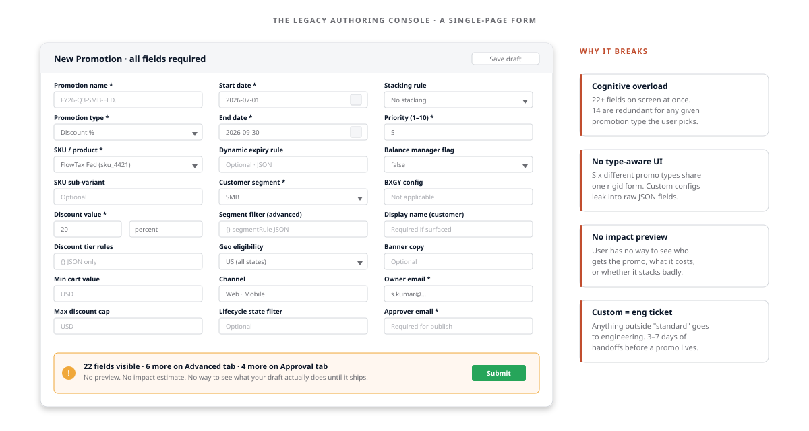
Cognitive overload by default
Twenty-two fields, six of which only made sense for one of the five promo types. Analysts had to recall which fields applied to which type — the form didn't help.
Custom = ticket
Anything outside the four standard configurations meant filing an engineering ticket. Typical cycle: three to seven days. Quarterly rush periods: ten to fourteen.
No impact preview
Save the form, hope the rule fires on the right cohort. Mistakes surfaced in customer support tickets, not in the authoring surface. There was no "who will this apply to and when" before commit.
Capability ↔ surface mismatch
The engine could compose far more sophisticated rules than the console could express. Capability that engineers reached via direct API calls; the people who actually understood the offers — pricing analysts — couldn't touch it.
03 · Design Goals
Two surfaces, deliberately split
Before any prototype, the team agreed on five outcomes. These framed every later trade-off — particularly the decision to keep the legacy form alive as a toggle rather than replacing it wholesale.
G1
Authoring through conversation
The agent's job is composition, not data entry. The analyst describes intent ("ten-percent off for new SMB signups, last week of the quarter") and the agent assembles the engine call — not the other way round.
G2
Read-only widget as the default landing
Most of the day, an analyst is checking that a promo is still firing correctly — not authoring a new one. The default surface is a read-only widget showing the rule in plain English, its scope, and its history. Authoring is one click away, not the front door.
G3
Structured affordances baked in
Free-text conversation alone collapsed in early prototyping — too many jargon failures, too many ambiguous references. The final agent leads with chips, scoped pickers, and progressive counters wherever a structured choice is faster than a sentence.
G4
Impact preview before commit
No promo can be saved without the agent first surfacing who it will apply to, when it will fire, and the projected financial impact at the planned scale. A deliberate friction step — the one place we wanted the analyst to slow down.
G5
Don't kill the legacy form — toggle it
For the four standard cases the legacy form was still the fastest path for an experienced analyst. We kept it as an opt-in toggle from inside the widget. The agent earns its keep on the custom cases; the form keeps its place on the routine ones.
04 · Discovery & Research
Eight analysts, one engineer's quiet confession
I shadowed eight pricing analysts across two weeks of normal authoring work — not a contrived test, just their real queue. I also sat with two of the engineers who fielded the custom-promo tickets. One of them said something that became the project's quiet north star: "I do the same configs every quarter — I should be a function call." That sentence was the brief.
What the shadowing surfaced
Fourteen fields were doing redundant work
A field-level audit of the console showed fourteen of the twenty-two fields were derivable from two or three upstream answers. Analysts were filling in implications they'd already given the form.
Six fields needed entirely different UI per type
The "scope" field meant six different things across the five promo types. A single text input was being asked to carry six structurally different selections — which is why it broke on every custom case.
Analysts talked about promos in sentences, not fields
When describing what they wanted to ship — to a teammate, to me, to their manager — every analyst used natural language. The conversion from sentence to form was the cognitive tax we kept measuring.
The riskiest moment was always "save"
Eight of eight analysts paused, re-read the form, and asked a colleague to glance at it before saving anything non-standard. The impact preview replaces that informal sanity check with a structured one.
05 · The Two Surfaces
A read-only widget by default. A conversation when something needs to change.
The architecture is two surfaces, deliberately split by intent. The Widget owns the steady state — the answer to "is this promo still doing what I think it's doing?" The Agent owns the change moment — authoring new offers and modifying existing ones. The split mirrors how analysts actually work: most of the day in monitoring, occasionally in authoring.
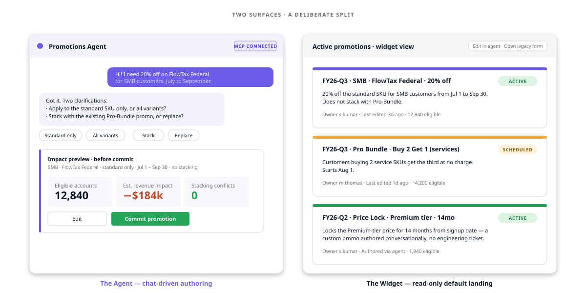
The Widget · steady state
A read-only card that renders any promo as a plain-English sentence ("10% off Plus subscriptions for new SMB signups, June 24–30, US only"), with its scope, recent history, and a row of actions. The default landing — and the surface analysts spend most of their day inside. Never asks for input until the analyst explicitly chooses to change something.
The Agent · change state
A chat-driven authoring surface backed by an MCP server that exposes the engine's full capability set as callable tools. The agent disambiguates intent, confirms scope, previews impact, and only then commits — five turns end-to-end on a typical custom promo. Free-text input is bracketed by chips and scoped pickers everywhere structured selection is faster.
06 · The Agent & The Widget
Designed as one system, expressed as two surfaces
Every authoring session starts in the Widget and ends in the Widget. The Agent is the connector — invoked when the analyst presses Modify, dismissed once a change commits. Detailing each surface in turn.
The Agent · a five-turn walkthrough
A typical custom-promo authoring session, end-to-end. Five turns. Each turn does a specific job; none of them are filler.
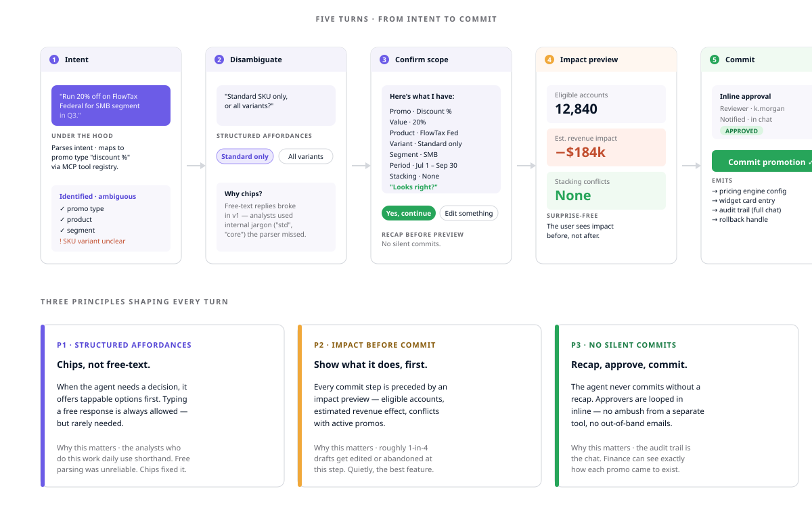
01
Intent · what are we trying to ship?
The analyst opens the agent and types or speaks the offer in plain language: "Ten percent off Plus for new SMB signups, last week of June." The agent does not try to fill a form yet. It parrots the intent back as a structured summary and offers two chips: refine and looks right.
02
Disambiguate · what's still ambiguous?
The agent asks at most two follow-ups, always with chips, never as open prose: "By 'new SMB' do you mean signed up in the last 30 days, or never had a Plus subscription before?" Each chip is a concrete predicate the engine can evaluate. If the analyst answers in prose, the agent translates it back into the same chip vocabulary so the underlying rule stays inspectable.
03
Confirm scope · who and when
The agent renders the full rule as a single readable sentence — the same format the Widget will eventually display — and shows a scope counter: "~3,800 accounts in the eligibility window. June 24 00:00 → June 30 23:59 US/Pacific." The counter updates live as the analyst tweaks predicates. Crucially, this turn is editable — chips are still active.
04
Impact preview · the friction step
The agent invokes a dry-run tool against the engine and surfaces three numbers: accounts touched, projected discount cost at planned uptake, and any policy flags (price-floor violations, overlap with an existing promo, audit-trail gaps). This turn cannot be skipped. About one in four drafts gets caught here — wrong cohort, double-discount overlap, expired pricing-floor exception. The analyst can fix in place or abandon.
05
Commit · and back to the widget
One confirmation. The agent calls the engine's commit tool, the widget refreshes with the new promo as its plain-English sentence, and the conversation collapses into a single audit-trail entry the analyst can re-open. No celebratory modal, no fanfare — the change is the success.
The Widget · anatomy
What the analyst sees the other 95% of the time. Four regions, each load-bearing.
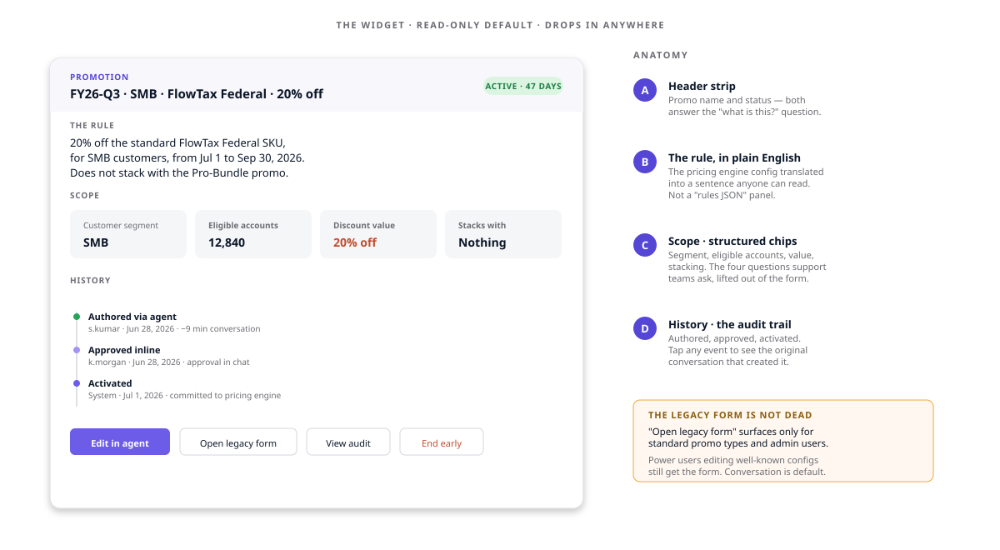
A · Header & status
Promo name, owner, status pill (Live, Scheduled, Paused, Expired), and time-to-next-state. Glance-readable. No interaction beyond opening the action menu.
B · The rule, in plain English
The full rule as a single sentence, generated from the structured rule the engine holds — never the other way round. Hover-to-reveal shows the underlying predicate vocabulary; click-to-expand shows the raw engine spec for engineering review. This sentence is the contract between the analyst and the engine.
C · Scope & history
Live accounts in window, lifetime fires, last-touched timestamp, and a sparkline of daily redemptions. Three numbers analysts asked for in shadowing — and didn't have anywhere before.
D · Actions
Three primary actions — Modify (opens the agent with the current rule pre-loaded), Pause, View raw. A discreet overflow menu carries Open in legacy console, the conditional toggle that lets veteran analysts fall back to the form for standard cases.
07 · Workflow Change
From five handoffs to one surface
The structural unlock isn't conversational UX. It's that the agent has tools the analyst didn't. The MCP server exposes the engine's full capability set — eligibility predicates, scope evaluation, dry-run, commit, audit — as discrete tool calls. The agent stitches those into a conversation; the analyst doesn't need to file a ticket anymore because the function call already exists.
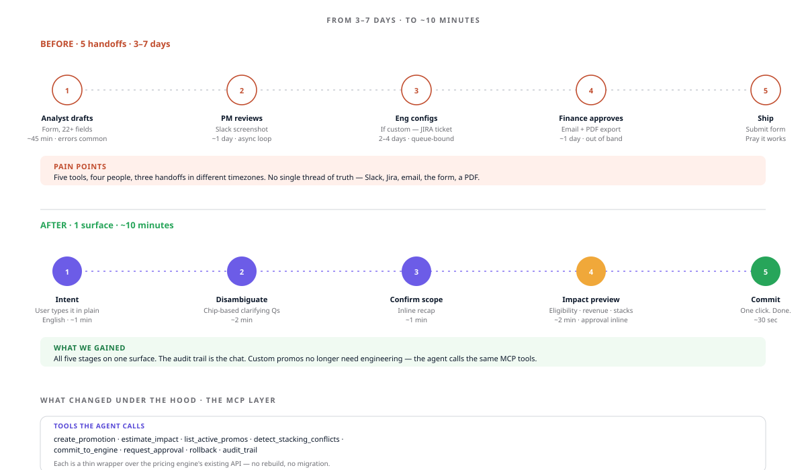
Before · five handoffs, three to seven days
Analyst drafts in the form, hits a custom case, files a ticket. Engineer reads the ticket, writes engine config, opens a PR. QA validates against staging. Release rides the next deploy. The analyst learns whether the promo behaves correctly when the customer-support queue spikes — or doesn't.
After · one surface, under ten minutes
Analyst opens the widget, presses Modify, completes the five-turn agent flow, commits. The same engine receives the same call it would have received via the engineer — only authored by the person who actually understood the offer in the first place.
Under the hood · MCP as the bridge
The MCP server exposes seven tools — list_predicates, resolve_scope, preview_impact, list_overlaps, commit_promo, pause_promo, get_audit. Each maps one-to-one onto an existing engine capability. The agent picks tools; the engine doesn't know it's being talked to by a conversation.
What didn't change
The engine itself. The policy approval chain. The audit trail. Eliminating handoffs doesn't mean eliminating oversight — every committed promo still emits the same audit record the legacy console did, with the conversation transcript attached.
08 · Design Process
Six stages, field audit to iteration
The process moved deliberately from understanding the existing form to prototyping the conversation that would partially replace it. Each stage's output was the next stage's input — no parallel streams.
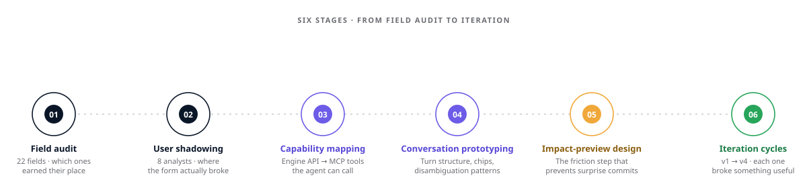
Field audit
Twenty-two fields. Which ones earned their place? The audit showed fourteen were derivable and six needed structurally different UI per promo type — the data that justified the split.
User shadowing
Eight pricing analysts, two weeks, real queue. Mapped where the legacy form actually broke — not in usability tests but in the unscripted moments analysts asked a colleague to look at the screen.
Capability mapping · engine API → MCP tools
Reviewed the engine's public capability surface with the engineering team. Defined seven MCP tools that map one-to-one onto engine operations. The agent's vocabulary is constrained to what the engine can actually do.
Conversation prototyping
Worked through dozens of authoring transcripts on paper before any UI — turn structure, chip vocabulary, disambiguation patterns. The five-turn shape emerged here.
Impact-preview design
The friction step. Designed so that commit cannot happen without surfacing scope, cost projection and policy flags. Tested specifically for whether it slowed analysts enough to catch errors without becoming the new bottleneck.
Iteration cycles
Four rounds — each broke something useful. The free-text-only v1, the surprise-impact v2, the edit-lost-context v3, the approval-ambush v4. Each round's failure mode became the next round's design constraint.
09 · Iteration & Feedback
Four versions, each broke something useful
Conversational UX punishes premature elegance. The first three versions all looked correct on paper and failed in different ways in front of real analysts. Documenting the failures because they're more instructive than the final shape.
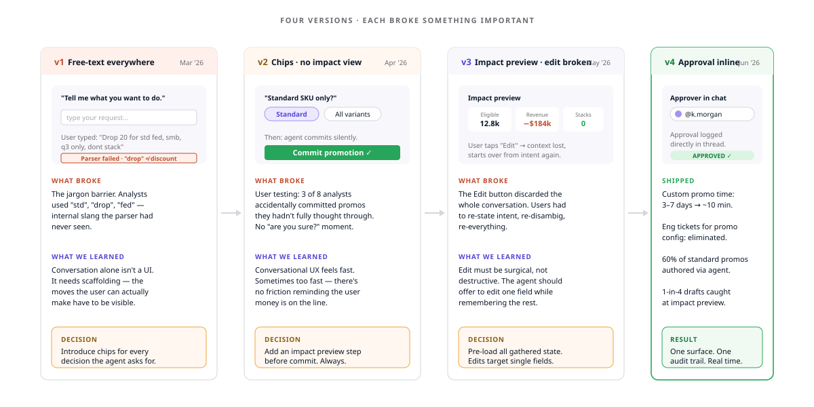
v1
Free-text alone → jargon barrier
The first prototype was a clean chat interface, no chips, no scoped pickers. It collapsed within five minutes of every session — analysts used domain shorthand the agent couldn't reliably parse ("SMB tier-2 GA cohort"), and the agent's clarifying questions arrived as more prose, compounding the load. Next version: chips and scoped pickers for every concrete predicate, prose reserved for intent and confirmation only.
v2
Impact arrived as a surprise at commit
v2 had structured affordances but only surfaced the impact preview at the final commit step, as a confirmation modal. Analysts had already mentally moved on by then — they were skim-clicking Confirm without reading. Impact had to be a turn, not a modal. Next version: impact became turn 4 of the conversation, with the scope counter live-updating from turn 3 onward.
v3
Editing an existing promo lost the original context
Modifying an existing promo opened a fresh agent conversation, blank — the analyst had to re-describe the offer just to tweak its end date. Next version:Modify pre-loads the current rule into the agent as a structured summary, and the conversation opens with "What's changing?" — not "What are we shipping?"
v4
Approval gated commit, but invisibly
Some promos need policy approval before commit. v3 routed those silently to an approval queue with no signal to the analyst. They thought commit had succeeded; it was actually pending review. Next version: the approval requirement surfaces inline during the impact-preview turn — chip-labelled, with the approver named — so the analyst either pings the approver in-context or knows to wait.
10 · Outcomes & Key Learnings
What the split actually changed
Numbers from the first quarter after rollout, alongside the three lessons I'll carry into the next conversational-agent project.
3–7d → ~10m
custom promo authoring time
Custom promos that used to cycle through an engineering ticket now ship in the same session the analyst conceives them.
0
engineering tickets for promo authoring
The custom-promo ticket queue went to zero in the first quarter. Engineering time returned to engine work, not config-writing.
60%
of standard promos authored via the agent
Analysts didn't have to use the agent for standard cases — the legacy form was still right there as a toggle. They chose it anyway, six times out of ten. That preference was the real signal.
1 in 4
drafts caught at impact preview
Roughly a quarter of authoring sessions reach the impact-preview turn and surface a problem — wrong cohort, overlapping promo, policy flag. The friction step earned its place.
Three lessons I'll carry forward
L1
Conversation only works with structured affordances
The romantic version — a clean chat interface, free-text in, perfect-output out — failed in five minutes flat. Chips, scoped pickers, and progressive counters aren't compromises against the conversational ideal; they're what makes the conversation reliable. The chat is the connective tissue, not the entire body.
L2
Read-only by default is a quiet revolution
The decision that mattered most wasn't anything about the agent — it was making the widget the default landing. Most of the day, the analyst is checking, not authoring. A surface that doesn't ask for input until input is wanted removes more friction than any number of cleverly designed forms.
L3
The agent isn't replacing the form — it's replacing the engineering ticket
The framing I almost got wrong: the agent vs. the form. The legacy form is fine for the cases it was built for, and analysts still prefer it on those cases. The real thing the agent replaced was the three-to-seven-day round trip through the engineering ticket queue. Any time a UI exists primarily to serialise intent into a ticket, there's a conversational opportunity hiding behind it.
A web-based software update application that controls the sequence of software updates across many regions for different types of vehicle lines.
Role
Senior UX Designer
Industry
Automotive
Platform
Web Application
Year
2024 – 2025
Requirement
From scattered spreadsheets to a structured platform
To provide a design solution that converts Excel-created data into a web application with the desired features, acting as a convenient platform for users. Creating feasible design concepts that will be developed into the application phase by phase in a structured module approach.
Design Process
An iterative, collaboration-first flow
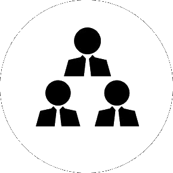
Collaboration
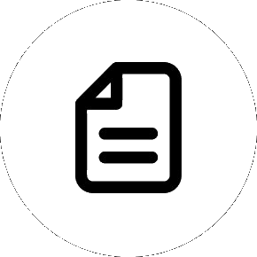
Planning & Documenting
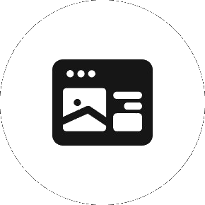
Design & Iterations
Development
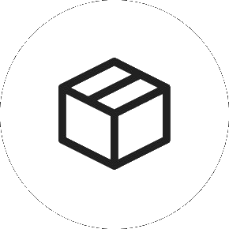
Release
Re-iterations loop back from Design through to Release
Initial Days of Client Sessions
Aligning on the foundations
The first months were a discovery phase: we studied the existing Excel-driven process, identified its complex workflows and collaborated with product owners and the development team to make the most of that phase.
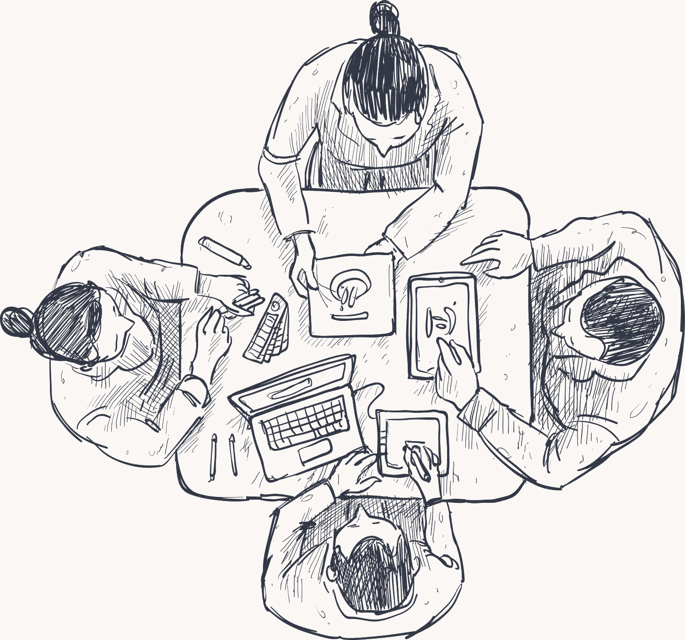
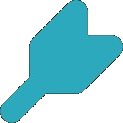
Purpose of the Application
Discussed the core purpose of the application in detail, in terms of achievable goals and benchmarks.
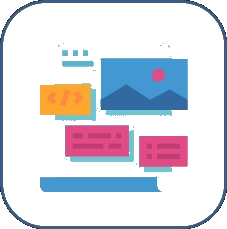
Expectations on the Design Team
Our role was to design the web-based application with effective features that significantly reduce users' effort.
Scope of Work
Understood the coverage of work in terms of design, development and testing.
Planning & Structuring
Sprint planning to decide which modules to start with, in a structured manner, with timelines set accordingly.
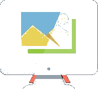
Gathering the required Artifacts
Gathered the Excel artifacts manually created by the Ford team, with real examples to correlate with the actual process.
The Existing Process
Manual creation of update sequences via Excel listings
The client team relied on manually creating update sequences in Excel listings across 4 different files, then feeding these files into the cloud system for update deployment.
Creating & Maintaining Excel Files
Users manually create 4 Excel sheets — Vehicle Regions, Model Year, Variant & Update Sequences — and have to constantly maintain these listings, with hundreds of thousands of rows, to push software updates.
Uploading files to Cloud Systems
The files are uploaded into cloud-integrated systems. Multiple systems with different packages process the data. Validation & reconciliation happens while importing the files.
Data Processing between systems
Sequence validation, integration with condition packages, discovering the right VINs for updates, obtaining vehicle targets, and finally deploying to vehicles.
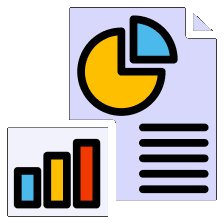
Summary Reporting after Deployment
Once deployment is done, the system creates summary reports with the information users need to create further sheets for upcoming priority updates and missed/failed updates.
Strategy & Brainstorming
Mapping action items before designing
We jotted down the key action items and our plan of action before starting on design concepts, putting together everything we had collected over the client sessions along with the information still to be procured before moving on to design proposals.
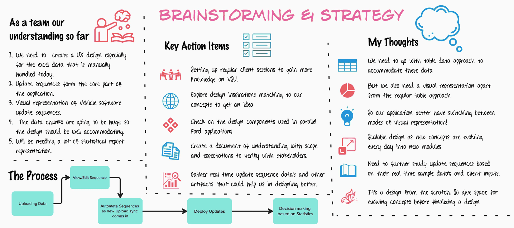
Feature Planning
Translating spreadsheet workflows into web features
We worked to evolve the Excel-based experience into a web application that automates much of the hectic manual work. To identify where we could propose features beyond what users were used to, we did feature planning within the design team and then checked feasibility with the development team.
Information Architecture
Compiling modules into a structured IA
Compiling all the modules into an information architecture to provide more structure and consistency in achieving our goal. This lets us clearly identify the modules and their functionality in a broader view.
Core Design Solutions
The key innovations we proposed
We wanted to give users a better experience with new features they never had in their manual Excel workflow. The below highlighted features were some of the key solutions we introduced based on our research.
Visual Sequence Representation
This was one of the well-received solutions from the client team. They were tired of going through the listing view apart from data edits — so this view was a core need to make decisions inside the application.
Each record can be viewed in a pictorial flow view where key users analyse what is happening in the flow and make critical decisions on software update sequences.
Indicates Sequence Number
Indicates Critical Path
Updates on Hold
Deployed Updates
Planned Update
Deployment In-progress
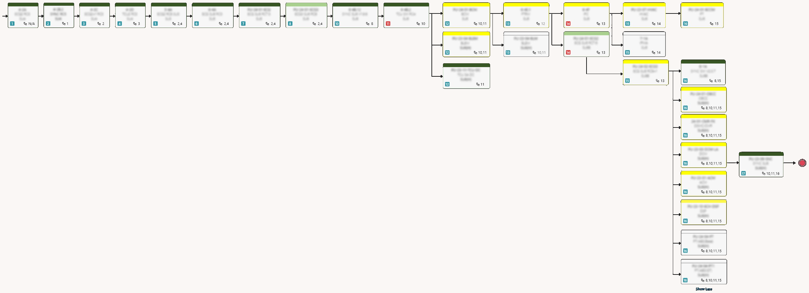
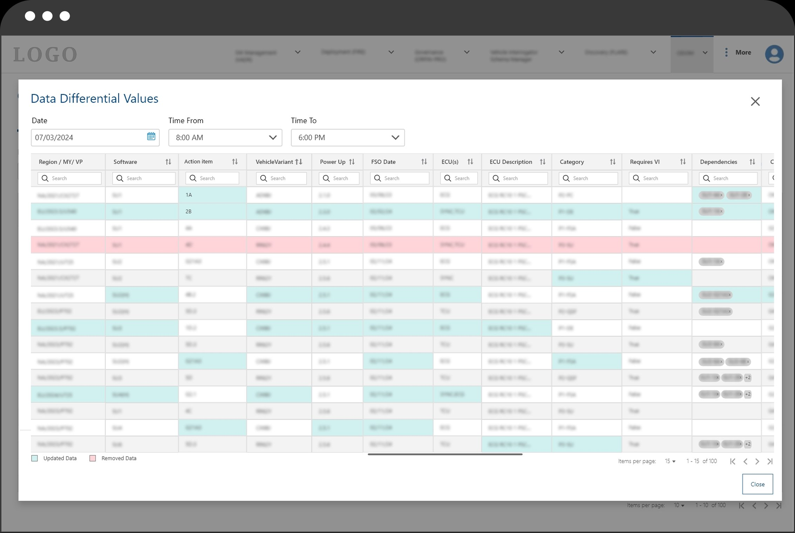
Data Differentials
The application doesn't just run on files uploaded one time. Users frequently modify data and upload it again, which adds a new value, changes an existing one or removes one.
To keep track, we built a dedicated view with a time-period filter and clear color coding: value changed, value removed, value newly added.
Conditions Editor
At some point the application needed complex conditions to be added to control update sequences based on certain criteria. So we had to create a Conditions Editor within the bulk editor functionality.
Oh yes — this one applies conditions to bulk items!
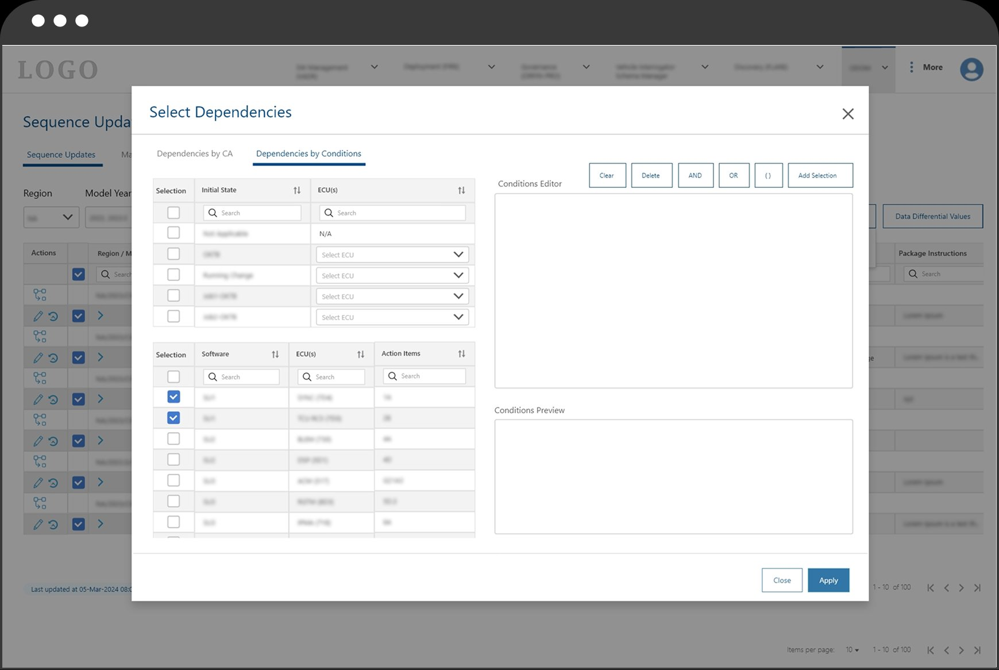
Statistical Representation for Holds
There are charts and stats across many modules, but this one is a fine example: product owners use it to decide whether to hold or release an update to end customers.
Creating Deployment Strategy
A dedicated UI to create and edit deployment strategy with various parameters that suit the business needs — controlling the number of updates to deploy per day and the interval frequency between deployments.
Hurdles Along the Journey
Adapting as the scope evolved
Evolving requirements
The base requirement kept evolving as we progressed. Since this was a project from scratch, new concepts came in that weren't discussed initially. Designing in a scalable format helped us accommodate these features later in the journey.
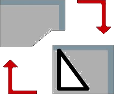
Shifting timelines
Initial planning was altered due to priority module developments and timeline constraints. We had to adapt accordingly and proceed in an unstructured way at times to give the desired solutions and meet the deadline.
An internal loan application that is used to process loans through various stages from loan onboarding to closure. It has 7 broad modules with a wide set of user groups using the application at different stages.
Role
Senior UX Designer
Industry
Fintech · Banking
Platform
Web Application
Year
2023 – 2024
Requirement
Refresh a legacy interface without breaking the system
To redesign the existing legacy application interface to enhance the user experience. Designs should adhere to their in-house design system and should not cause major API changes.
Agile UX Process
A workflow built for continuous testing & iteration
Planning & Discovery
Collaboration & Ideation
Design
Development
UAT Testing
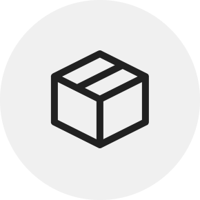
Release
Internal testing & reiterations · Rework & reimplement loops at each stage
Initial Phase Planning
Mapping 200+ screens before drawing a single one
We planned the initial 4 months as a discovery phase, as the application has 200+ screens and 500+ entitlements. We needed to study the application and identify complex screens and workflows, then mapped out feasible design concepts after collaborating with product owners and the development team — making the most of the discovery phase to deliver impactful design solutions.
Understanding Loan Details
The core screen, structured
As a process of identifying complex workflows, we felt that the Loan Details section forms the core part of the application — where all the important tasks are carried out by different user groups. We created an IA structure segregating sections under Loan, Property and Client to get a better understanding before laying out designs.
Major Observations
Pain points spotted in heuristics
With some initial heuristics we identified explicit pain points that could be seen in the Loan Details screen. Our key focus was to make this screen more user-friendly.
Congested layout & navigation. The existing layout was pretty congested. Users might easily get lost or find it hard to locate the section they're looking for.
Errors push content below. Scenarios with lots of errors/info depiction on screens actually pushed the main content below, increasing the vertical scroll of the page.
Vertical-only form layouts. Form elements are placed entirely vertically while there is unused space on the screen.
Loan card hides on scroll. The loan card depiction needs proper data segregation and a better visual representation as it hides when scrolling.
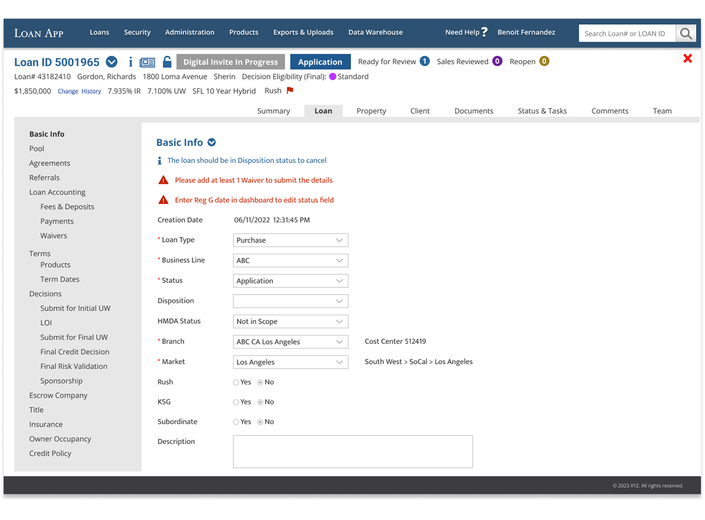
Collaborative Design Sessions
A weekly rhythm that kept us aligned
Throughout the course of the project we had weekly connects with the Design head of the project, who was in fact the product owner. Also key persons from development and business teams were included to share opinions on the design concepts. We gained a lot of improvement and pace through these sessions.
Design brainstorming
As per the sprint plan we picked up modules and analyzed them to come up with design concepts. Then collaborated and fine-tuned these into tangible solutions. Prototyping gave a realistic feel of the application.
Loan process information
Creating & cloning existing loans, processing newly created loans through stages till approval. Got insights into the many paths a loan can take through the system.
Work prioritizing
Prioritized modules in the design sprint plan. Decided on sections that can be designed apples-to-apples vs. sections that needed more thought.
Expectations
Deliver a consistent design across all modules adhering to the JPMC Design System. Be more creative on the Loan sections of the application.
Affinity Mapping
Segregating sections for internal users
After getting more inputs from the Product Owner and Stakeholders, we segregated these sections in a way that makes more sense to the internal users. The target was to make it easy for users to perform their daily tasks in the dashboard.
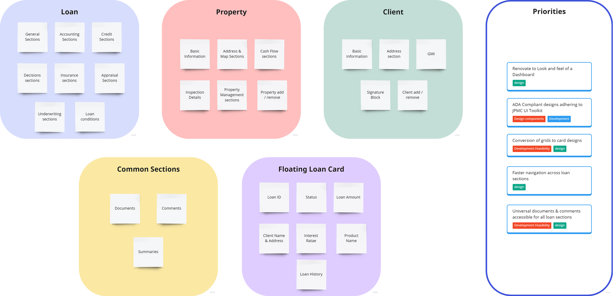
Concept Sketches
Rough ideas before any pixels
Based on inputs from our regular sessions and our understanding of the application, a few sketches were done initially to create a working idea of the components we could use in our new design layout — to begin with before our wires in Figma.
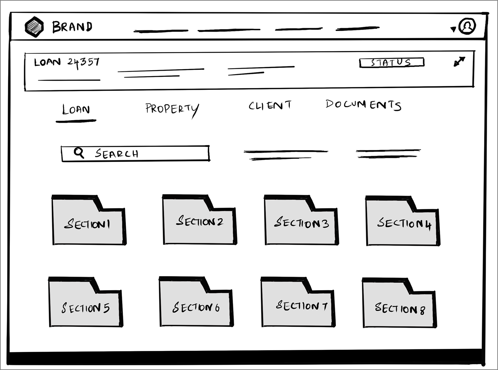
Loan Details Page
Wanted to give a fresh look and feel with proper navigation and segregation of sections in a meaningful way. Accessing sections itself was a tedious process in the existing application. So the goal was to make this page more accessible for users.
Modal → Pane conversion
Pane approach keeps the design consistent by size/height vs a modal that could have various widths and heights. It gives better context of the primary screen vs a modal that blocks the primary view. Less intrusive compared to the modal approach.
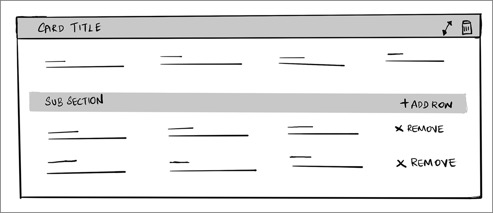
Grids to Card depiction
As per the inputs from the product owner, certain pages had data depicted in grids but didn't require it as there wouldn't be more data coming in. So we were asked to depict these in a better visual manner — using cards that contain those record details.
Key Design Solutions
Patterns that scaled across 200+ screens
Universal Documents / Comments Section
We checked the feasibility with the development team in tying up the documents and comments sections with all the Loan sections, then made it a universal tab segment for all 60+ sections in the dashboard.
The previous flow: open Loan section → review → close → back to dashboard → open Document section → review → close → make decision. The improved flow: open Loan section & review all at one place to make decision.
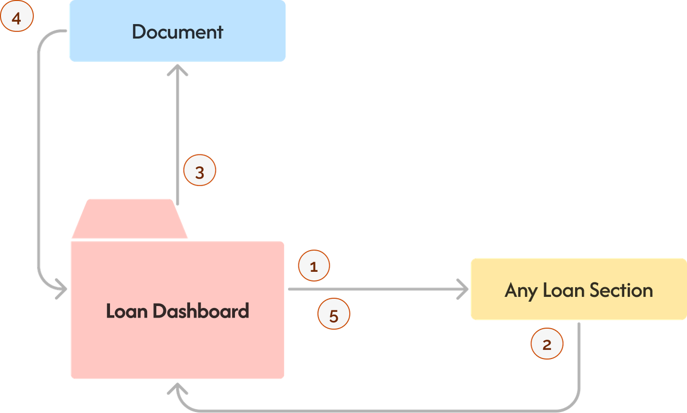
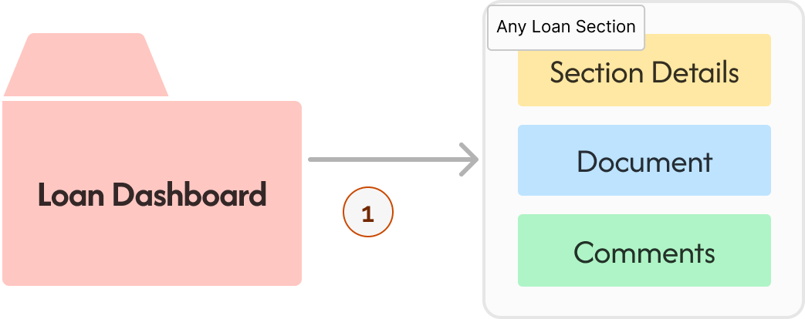
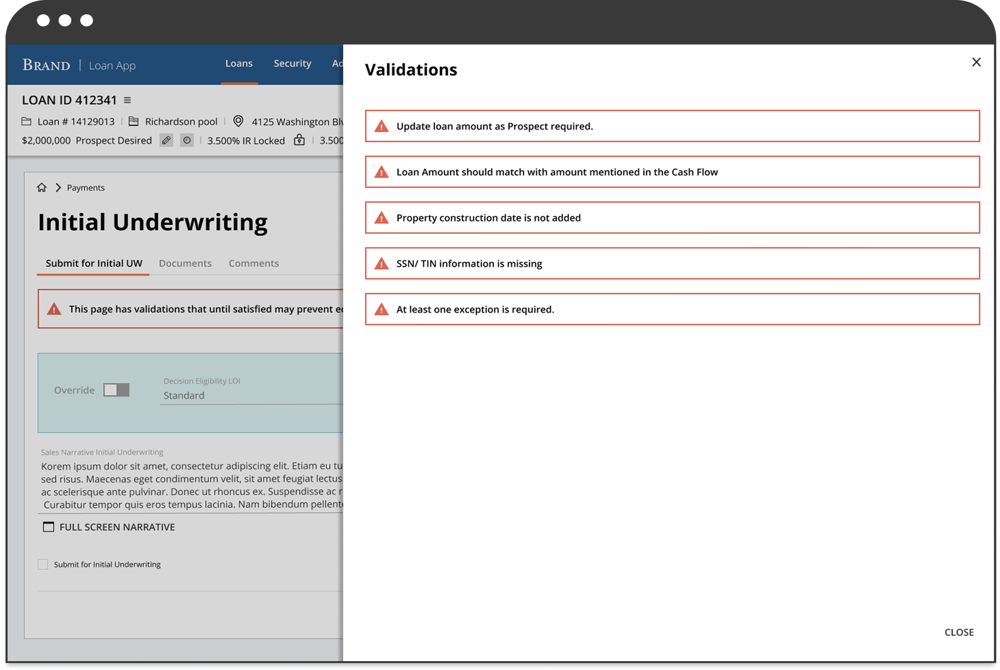
A different approach to validations
Scenarios in many screens had too many validations — up to 7+ in certain cases. This actually pushed the main content (forms / grids) below. We needed to show the validations as it's vital info, but we didn't need content jumping around.
So we took a different approach — a general banner that leads to a slide-out left pane showing all the validations on that page.
Flexing Artboards
Midway through the project, responsive design (RWD) came into scope especially for Loan screens. We learned and adapted to create flexing artboards that can range from desktop to iPad devices.
Improving Accessibility
The Sig Block screen is one special example where the legacy application only had drag and drop methodology — totally inaccessible for keyboard users.
We made this page more accessible and structured. So we introduced new row-based functionality to build the sig block hierarchy manually.
The Renovated Loan Dashboard
Collaboratively with the product owner we brainstormed more on this dashboard's look and feel. We introduced many new elements to enhance the page's usability.
Smooth Navigation
Floating Loan card
Property & Client selection
Page finder
Clear information depiction
Challenges Faced
What made it harder than it looked
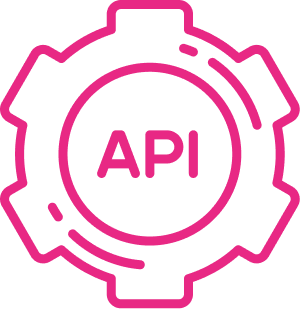
API constraints
Design proposals had to be limited within API & functionality changes. Checking feasibility of designs with the development team and iterating back and forth was tedious.
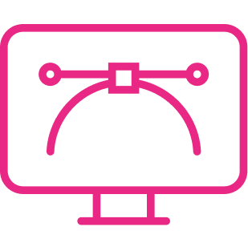
Custom design components
We had to create and modify some of the existing design components to propose design solutions with new elements that enhance the user experience.
File handling at scale
File handling was tedious — there were more than 200 screens. We needed to properly segregate and keep them in individual files end-to-end prototyped.
Testimonial from the Product Owner
The project greatly benefitted from your attention to detail, creativity, and willingness to provide feedback and creative perspectives when designing. In all, I believe the design team produced several hundred screens in a little over a year working together — an impressive scope of work.
A single-window information system that provides a wide range of protections and benefits to servicemembers on active duty or deployed, and to their families, under the Servicemembers Civil Relief Act (SCRA).
Role
Senior UX Designer
Industry
Fintech · Banking
Platform
Web Application
Year
2023
Requirement
An MIS intended as a standalone platform
To study and understand the existing working legacy application and map the workflow in each module. Propose a new design with feasible design solutions, simplifying the user flow and information depiction. New design board should have scope for future enhancements in the application.
Design Process
From discovery to development
Discovery
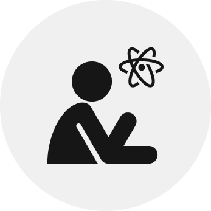
Ideation
Conception
Design
Development
Approach We Took
A structured 5-step rollout
Study the existing application
Understand the context of use by playing around with the application and going through all the screens in every module to get a thorough idea.
Gather & specify user requirements
Collaborate with stakeholders and interview users to gather more insights about the requirements and document them.
Create Redesign concepts
Based on the insights and the information gathered, sketch out design concepts. Low-fidelity wireframes are enough in this phase.
Validate the concepts
Validate the design concepts with the product owners, stakeholders and key users.
Convert concepts to visual designs
With the help of the design system convert the validated concepts to visual designs with a working prototype end to end.
FigJam Brainstorming · IA
Mapping the existing system
We began with analyzing the existing web flow, then created the IA map of the existing system after identifying redundant processes in it. The Central Processing line performs the core actions of the application: cases move through the review queues based on their state and status until they reach the completion stage.
Heuristic Evaluation
Observations from the existing UI
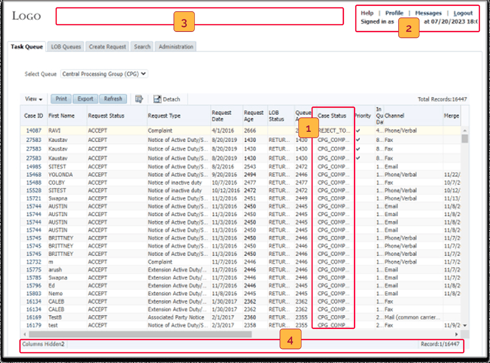
Observations
Queues are the landing area of the application, where users review information at a glance and decide which tasks to perform. Key observations from the old design:
1
Case status cards are depicted in normal text forms, which makes it hard for users to identify cases.
2
List of general application settings that can be grouped together.
3
Broad module sections aren't displayed in a header format.
4
Pagination is not available for the grid as the current implementation would cause lengthy vertical scrolling.
Observations
Case Details page forms the core part of the application as all the key tasks are performed within this page, which has multiple sub-sections and forms that can be viewed and edited as per entitlements.
1
The case details page has no navigation to go back to the former page. In fact there is no information to the user on where they are in the application now.
2
Too many accordions make the page unstable and force uneasy scrolling up and down.
3
Form elements haven't been segregated in a readable manner.
4
The entire layout needs renovation to improve the usability of this page.
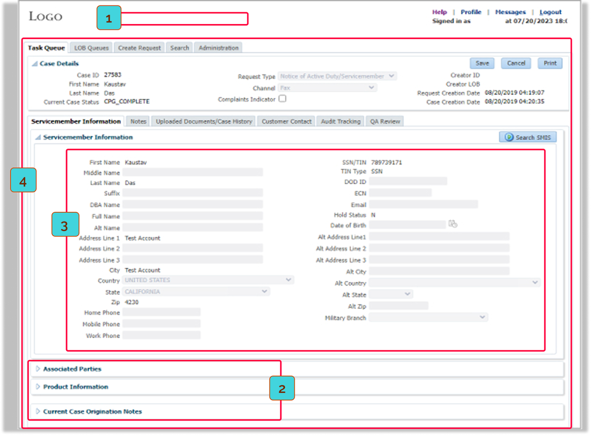
Key Discussions
What we learned from POs, stakeholders and users
Key Information from Product Owners & Stakeholders
On the user groups
External (D2C) users make up 30% of daily usage, internal CMs (Case Managers) and Quality Auditors 50%, and sub-vendors 20%.
On case statuses
There are a lot of procedures and notifications that come along with the document submission flow. So design solutions need to allow some flexibility for those.
Major concerns
Cases get cluttered. Bringing more information up front about the case can help quick decision-making — having key information in one place.
Expectations
Simplify the existing legacy interfaces — adhere to the new design system & allow for future improvements. Bring information up front efficiently and reduce processing time.
Key Information from Users
Central processing users
Users work on case data as cases move through the system, so they need all the information readily available. Cases move on different states & queues. Sometimes they shift across teams. Cases need a clear status indicator.
Quality Analysts
They have to ensure the cases are properly executed. To do that, they need easy access to recent case activity and a way to drill into specific transactions or case-related items.
Customer Journey
A map of the user experience
Key Design Solutions
Automating redundant steps
Automated new request to new case process by eliminating redundant steps
In the new workflow, a New Case goes directly to the queue without manual intervention
Channels
New Request
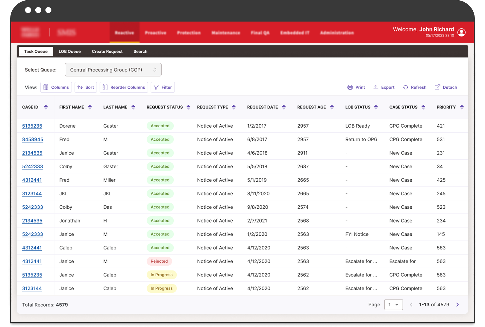
We completely eliminated the request-related data in the grid storage as it was an unnecessary manual step for the user to approve. Instead, it is merged into the case status and can be rejected or progressed from there.
Introduced new features to overcome existing pain points
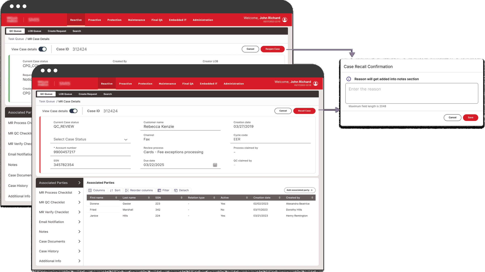
In the legacy system there was no way to recall a case that had moved to another queue, or to reopen completed / closed cases.
As we learned this from the user interviews and business team connects, we introduced new functionality for both, so users no longer need a roundabout process to recall or reopen cases.
UI Enhancements
Renovated Queue & Case Details
Queue Page
The application had 500+ statuses across screen flows. We retained the values but pre-sorted them logically — users could choose between custom views vs the legacy state-based view, giving them control without disrupting habits.
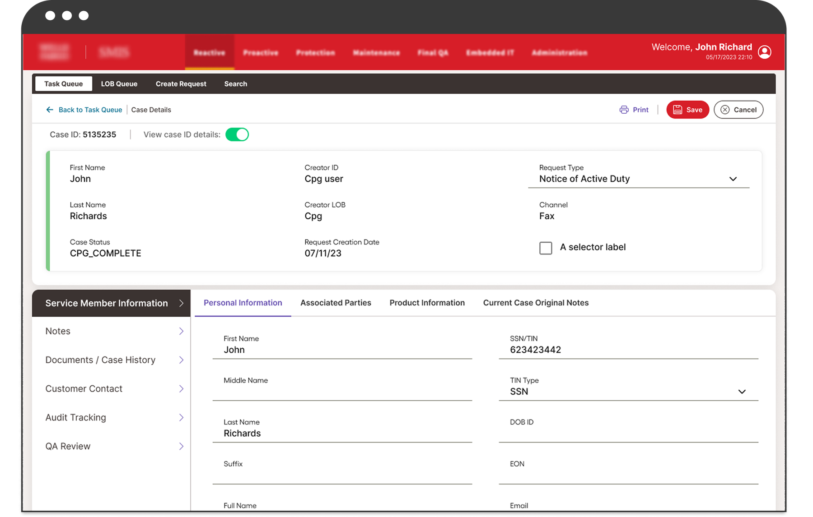
Case Details Page
Brought the most important case information to the top of the page. Information not directly needed for decision-making was moved to a side pane that opens contextually.
Design System & Accessibility
Codifying the visual language
We documented brand colors, page structure, color and sensory characteristics, components, actions, primary/secondary form elements, and error handling — to make sure the new application could grow consistently while staying WCAG-compliant.
Brand Colors
#D71E28
WF · Coral Red
#FFCC3D
WF · Yellow
#141414
WF · Warm900
#FFFFFF
WF · White000
#946E3A
WF · Gold
Page Structure
Header is essential to the application and needs a proper hierarchy.
Skip Links are required for users to jump past the navigation to the main content.
Page Title is needed for every page to provide unique context.
Masthead Component
LogoSR
skip to main content
A skip link lets keyboard users bypass repeated navigation and jump to the page's content quickly. We asked the dev team to include a skip link for keyboard users primarily.
Introducing a masthead with modules brought a visual hierarchy that the application lacked earlier.
Keeping all the app settings under one roof.
Color and Sensory Characteristics
Color Information — do not use color alone to convey information.
Need to ensure text and background have enough color contrast as per the standards.
Pill Components
Case CompleteCase EscalatedCase Rejected
For status depictions in the queue, we cannot just use icons with colors to indicate state as it wouldn't be accessible for blind users. So we needed text information as well. With the Pill component we were able to achieve this visual depiction for all types of users.
Buttons
Primary
Default
Disabled
Focused
Secondary
Default
Disabled
Focused
When organizing primary / secondary actions, the placement of these buttons was a key consideration. As the button components already adhere to WCAG standards, the background colors of the surfaces where we place them have to be taken into careful consideration so they don't deviate from the standards.
Form Elements
Form Labels — input fields must have persistent visual labels.
Make sure text and background have enough color contrast as per the standards.
Input Field
1 Input Label
2 Optional Label
3 Rear-end Icon
4 Support Text
5 Input Text
The input field component is provided with all sorts of enhancements to keep the users informed and prevent error scenarios while form handling.
Error Handling
Ensuring form-field error messages are clearly indicated and associated with the proper field.
Clearly indicate the fields in error when information is submitted.
Input Fields · Error-Highlight Scenarios
Text Field
! This is error text below text input fields
Dropdown
! This is error text below dropdowns
Inline Field
The application was heavily form-reliant, so it required clear depiction of error messages — especially for the screen-reader users.
The development team had to ensure these messages are announced by screen readers, so that the error scenarios are better handled and more accessible for users across the application.
QikPod is a logistics startup based in Bangalore. Its application controls smart lockers — pods placed at prominent locations across the city — so delivery persons can drop parcels into lockers and customers can pick them up.
Role
Jr. Product Designer
Industry
Logistics · IoT
Platform
Mobile + Web
Year
2019 – 2021
Requirement
One app, three user groups
To design a mobile application facilitating parcel drops & pick-ups in electronic lockers for 3 user groups — Delivery persons, End consumers & Admin group. A Super Admin dashboard (web application) controls all the user groups' privileges.
Design Process
An iterative path through four phases
Discover
Define
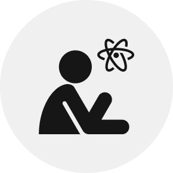
Ideation
Design
Re-iterations between each phase
User Interviews
Listening to both sides of the transaction
After discussing the requirement with the product owner and stakeholders, we got a clear understanding of the mobile application we needed to design. We then interviewed real users — 3 delivery persons and 5 residential customers — to capture their pain points and needs in delivering or receiving parcels.
Major questions to delivery persons
How long have you been in this line of work?
How is your experience especially when delivering parcels to apartments and institutions?
What if you could deliver parcels into a locker with an OTP?
What issues are you facing while delivering to a Pod?
What could be improved with today's OTP method?
Major questions to residential customers
How frequently do you purchase stuff online?
Are you facing any challenges with your e-commerce parcel delivery?
Can you highlight some of the major challenges you face today?
Would it be convenient if you could pick up your parcel from a locker system within your apartment?
Would using a mobile app for this be convenient?
Key insights from interviews
Saddam
Delivery Executive
"So many floors and phases within a residential apartment to identify and navigate all the way to deliver parcels to respective flats."
Vignesh
Delivery Executive
"When customer is not at the place I had to call them multiple times — sometimes wait for a long time before handing it over to someone else."
Andrea
Residential Customer
"I could not be there to receive my parcels due to meetings or other commitments. I had to request someone else to receive on my behalf."
Renuka
Residential Customer
"I find it so disturbing to receive so many calls from delivery persons asking for directions and other details."
Ananthan
Residential Customer
"I find it inconvenient and unsafe when my parcel is handed over to security persons — I buy valuable stuff online."
User Journey Mapping
From delivery executive to end customer
We needed to understand the touchpoints throughout the experience from these users' perspective, so we mapped the journey from delivery executive to end customer via the pod storage facilities.
Feature Brainstorming
Mapping features per user group
We started brainstorming around the features needed on the major screens for each user group. We wanted a clear understanding of the tasks they would perform in their daily routine.
Information Architecture
An IA that works for all three groups
After getting a clear idea from the feature brainstorming, we moved into IA mapping — first mapping a general set of activities that works for all the user groups.
Concept Wireframes
Ideating concepts on the whiteboard
Based on the IA mapping activity, we ideated a few concepts on the whiteboard to see how the features could fit into specific screens.
Onboarding
Onboarding didn't require many steps, as the mobile number is already stored in our system. So the user could just log in with their mobile number and OTP — plus a few details on first login (name and email).
Drop / Pick Flow
As the Drop and Pick flow forms the major tasks in the application for delivery persons and end customers, we needed to make this very simple and easy to understand for users — without too many steps.
Visual Design Flows
From wireframe to final UI
Onboarding Process
Delivery partners' authorized mobile numbers are already stored in our system. So they only need to log in and validate their mobile number with an OTP, then proceed with a few details.
Drop flow · pre-reserved & manual reservation
The drop activity is carried out by delivery partners and even by customers at times for return parcels. A drop is done in one of two ways: a pre-reserved drop, or by creating a manual reservation.
Help & Support
On the initial roll-out we observed many pod issues and other technical issues. So we enhanced the support section to let users report pod or parcel issues against a recent activity / transaction.
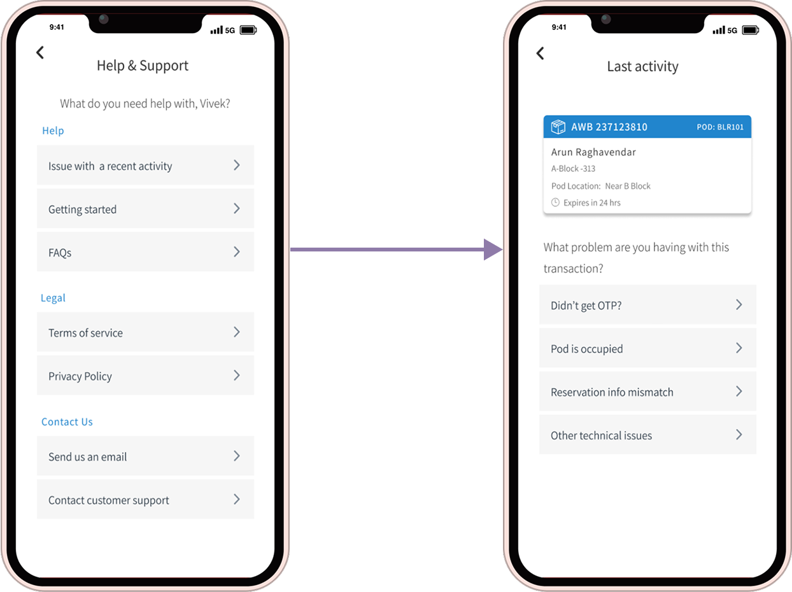
Log history
Logs are tracked especially for delivery partners and admins at specific locations to identify issues and resolve them immediately.
A fitness trainer application that virtually assists users in performing workouts based on their inputs — starting with goals and progressing through tasks to achieve them.
Role
UX Designer
Industry
Health · Fitness
Platform
Mobile Application
Year
2021
Requirement
A fitness companion for the home environment
To create a fitness application that lets users do their preferred workouts in their preferred environment. Mobile application designs, prototyped end to end.
Design Process
Discover · Define · Ideation · Design
Discover
Define
Ideation
Design
Re-iterations through each phase
Survey & Results
Listening to users before designing
We conducted online survey research and one-on-one guerrilla interviews. Most users fell into the category of "in need of a fitness application with content worth following."
Key Takeaways
Most of them don't have the time to visit a gym due to work / profession.
Referring to online sources for assistance.
Workaholic people form the majority of the target audience.
Branding plays a vital role in grabbing users' attention.
Convenience matters a lot for the target users.
Personas
Two distinct user archetypes
Based on the survey results and interview takeaways, two personas were created which cover the core audiences for the application.
Story Boarding
Scenarios for each persona
We created user scenarios based on their responses and storyboarded them — framing pain points as a story walkthrough makes them easier to relate to.
Scenario 1 · Dharmesh
An IT professional who works long office hours on weekdays. Worried about his physique, he felt the need to exercise and stay fit despite his time constraints. He searched the internet for methodologies to work out at home — and came across Livfit. Out of curiosity he downloaded the app and started using it. Now he's happy with the progress and time saved.
Scenario 2 · Ananya
A homemaker with 2 kids and a tedious daily routine. She wanted to burn calories but had no time to visit a gym for guidance. A friend recommended an app that virtually mentors users through workouts. With the initial onboarding inputs the app suggested plans for her — after 2 months she was delighted to lose 3 kg.
Card Sorting
What features actually help?
Once we knew the user requirements, we ran a card sorting exercise to understand which features and flows would help users reach their goals.
Information Architecture
Structuring the app for different needs
Refining the card sorting output, we created the information architecture for the application. It lays out the features and services under each section of the app.
Low Fidelity Wireframes
First passes on priority screens
Some concept wireframes were created for onboarding screens, workout plans, workout progress, profile & goals. These were some priority sections in the application.
Visual Designs
The final UI, screen by screen
Home Screen
The home is categorized into three sections — a banner for the highest offer, a sub-section of offers available for basic plans, and a recommendation section based on the user info collected during onboarding that suggests workout plans and diet plans.
Workout Screens
The workout plans are categorized based on body sections the users want to focus on. Under each section, a specific set of workouts is listed for the user to choose their preferred option. Each workout has a number of sets, reps and approximate time taken to complete them. Equipment information is also listed below each workout.
Workout Progress
The workout progress of the user is depicted in two types of graphical views — a weekly analysis for the number of workouts successfully completed by the user, and a comparative analysis of workouts to calories burnt in terms of days, weeks and months.
Profile Screens
Profile is divided into three sections for the user's convenience: Active plans section for ongoing plans, Goals section for the user to know the completion rate to reach their day-to-day goals as well as long-term goal, and My Info section covering the user's physique details that are constantly updated as they progress.
Nutrition Guide
This is an add-on section, but one users showed strong interest in. The Nutrition tab is divided into two segments: Meal plan segment lists all meal plans for the user to choose their preferred plan, and Health Tips segment depicts the latest articles regarding health, diet and nutrition.
A subscription UX framework designed in deliberate partnership with Claude AI — used as an ideation accelerator, edge-case probe, and pattern-variant generator. The output isn't a stack of mockups; it's a reusable, configurable system any product team can extend.
Role
Senior UX Designer · Systems
Industry
Fintech · SaaS
Platform
Web Application
Year
2026
01 · Project Overview
A subscription UX framework built with Claude AI
A major American financial-software company was shipping six different subscription experiences across its product suite — each surface owned by a different team, each with its own upgrade, downgrade and recovery patterns. My remit was to design a single workflow framework that consolidated those patterns and made them rapidly composable. Claude AI became a deliberate part of the workflow — used as an ideation accelerator and edge-case probe, not as a screen generator.
My role
Defined the strategy, the framework architecture, the methodology by which AI was integrated, and led the human-side curation and validation. Owned design system alignment with IDS, accessibility audits, and stakeholder buy-in across six product teams.
Scope of work
End-to-end: comparative research → pattern taxonomy → an internal "builder" tool that designers and PMs use to assemble lifecycle flows from configurable primitives → handoff guidelines, edge-case playbook, and a published component library extending IDS.
02 · Problem Space
Six products, six patterns, one frustrated customer
When a customer upgraded in one product and then downgraded in another the next month, they encountered two completely different mental models — different button hierarchies, different cancellation copy, different recovery semantics. Each team had reinvented the wheel.
Inconsistent experiences
Different button placements, status labels, and cancel-flow language across products eroded trust at the most billing-sensitive moments.
Duplicated UX effort
Six teams designed near-identical upgrade flows in parallel — months of work, no shared library to pull from.
Compounding design debt
Each surface accumulated micro-variations over time. By 2025, no two SKUs shared the same downgrade-review pattern.
Edge cases left to luck
Expired cards, paused subscriptions, prorated mid-cycle changes — every team handled them differently, often inconsistently.
03 · Design Goals
From screens to systems
Before any pixel, we agreed on five outcomes the framework had to deliver. These goals became the criteria by which every later pattern, primitive and AI suggestion was judged.
G1
One source of truth
A single canonical place where every B&S pattern — upgrade, downgrade, recovery, comparison — is defined, versioned, and consumed by product teams.
G2
Compositional, not template-rigid
Patterns must be assembled from smaller primitives (pricing card, status banner, comparison block) so teams can extend, not branch.
G3
State-first, screen-second
Design the lifecycle states (active, trial, past-due, paused, cancel-pending) before the screens — the screens emerge from the states.
G4
AI as accelerator, not author
Use Claude to surface variants, probe edge cases, and pressure-test copy — but every accepted pattern passes through human judgement on clarity, ethics, and accessibility.
G5
Honest by default
No dark patterns. Cancellation flows must be as discoverable as upgrade flows. Retention messaging must be informative, not coercive.
04 · Discovery & Research
Tearing down three SaaS giants
I ran a structured comparative UX teardown of three subscription products that have evolved their billing UX over many years — Notion, Slack and Netflix. The lens was deliberately narrow: transition flows. How does each product handle the moments where the customer is changing plans, leaving, or recovering from a failed payment?
What the teardown surfaced
Side-by-side beats single-column
Notion's three-up comparison with a clear "current" indicator outperformed every modal-driven plan-change pattern we tested in usability interviews.
Loss aversion needs concrete dates
Slack's downgrade-review pattern paired feature loss with the exact effective date — abstract "you'll lose access" copy tested significantly worse than "After Aug 1, you'll lose…".
Recovery must not block access
Netflix surfaces failed payments via a top-of-screen banner without locking the account — punitive lockouts destroy trust and increase churn rather than recover revenue.
Pause beats cancel — when honest
Across all three, an explicit "pause" option recovered customers who would otherwise cancel. But only when pause was easy to find, not buried as a manipulative gate.
05 · AI-assisted Workflow Strategy
Claude as a systems-exploration tool
The deliberate framing: AI is best at breadth, humans are best at judgement. I built a four-stage loop where I framed each scenario, Claude generated 10–15 variants and edge-case branches, I curated against IDS / accessibility / ethics, and the curated decision became a configurable primitive in the builder. Every loop closed by feeding back into the next scenario.
Where AI actually moved the needle
PATTERN EXPLORATION
Lifecycle flows surfaced as branches, not single screens
Prompted Claude with a scenario like "customer downgrades from Plus to Simple Start mid-cycle while past-due" and got back a decision tree of 14 branches across upgrade, downgrade, cancellation, failed-payment recovery, and plan-comparison transitions. Branches I'd never have manually enumerated — like "downgrade-while-past-due-with-pending-credit" — surfaced naturally.
EDGE-CASE SIMULATION
Probes for the cases nobody wants to design for
Structured prompts to simulate: expired cards mid-renewal, paused subscriptions with prorated credit balances, enterprise billing exceptions requiring AE escalation, prorated upgrades crossing fiscal-year boundaries. Each probe returned ranked variants with the underlying logic spelled out — easy to accept, reject or escalate.
COPY VARIANT GENERATION
Ten ways to say the same thing — then pick one
For every system message — "your card expired", "your plan changes next cycle", "we'll prorate today" — generated 10 variant phrasings spanning tones (neutral, warm, urgent) and explicitness levels. I picked the variant that scored best on clarity + neutrality, never the most "engaging" one.
PATTERN PRESSURE-TEST
"Where does this pattern break?"
Final step before committing a pattern to the builder: ask Claude to enumerate failure modes — accessibility blind spots, ambiguous states, locales where the copy doesn't translate cleanly, dark-pattern risks. Roughly one in four pattern drafts came back with a real flaw I'd missed.
What AI was explicitly not used for
Final layout decisions, visual hierarchy, or component composition — those were human judgement against IDS specifications.
Ethical retention decisions — every dark-pattern temptation Claude proposed was rejected and logged as a learning.
Final copy that appeared in the product — variants were a starting point; I rewrote the chosen variant for tone and accuracy.
Anything customer-identifying — all prompts used synthetic personas and anonymised scenarios.
06 · UX Methodologies Applied
Five lenses, used deliberately together
Each methodology answered a different question. Systems thinking gave shape to the framework. Atomic design gave it parts. Scenario-based design told us what cases to design for. Human-centered AI collaboration governed how Claude was used. Progressive disclosure governed how information reached the customer.
M1
Systems thinking
Rather than designing isolated screens, I approached billing as an interconnected lifecycle ecosystem. Defined reusable flow logic, state-based UI behaviour, and scalable decision patterns. The "upgrade" pattern isn't a screen — it's a state machine that emits screens depending on the current lifecycle position.
M2
Atomic design
Created modular building blocks — pricing cards, invoice modules, status banners, plan-comparison blocks, retention cards, payment-recovery patterns. Each block has documented states, variants, and accessibility requirements that conform to IDS tokens.
M3
Scenario-based design
Mapped flows across the multiple user states that the framework had to support — active subscriber, trial user, downgrade-intent customer, paused subscription, expired subscription, enterprise customer hitting a custom-quote ceiling. Each scenario became a test case the builder had to satisfy.
M4
Human-centered AI collaboration
Used AI as an ideation accelerator while maintaining human judgement on usability decisions, prioritisation, ethical retention patterns, and clarity of communication. A documented curation protocol: every AI suggestion is tagged accepted / rejected with a reason logged in the framework's evidence trail.
M5
Progressive disclosure
Reduced cognitive load by progressively revealing billing breakdowns, advanced plan settings, retention offers, and plan-change implications. The default surface shows what the customer needs to know; deeper detail expands on demand. Trowsers, accordions and side drawers carry the load.
07 · The Builder Framework
Designing a builder, not a deck of screens
The output isn't a Figma file with mockups. It's a tool. Designers and PMs across six product teams open the builder, pick a scenario, select the lifecycle state, and the builder assembles a configurable flow from modular templates and primitives. Here's how that actually plays out when a designer needs to ship an upgrade flow.
A walkthrough · building an upgrade flow
Four deliberate steps. Roughly twenty minutes of work for what used to be a week of variant sketching across siloed teams.
01
Pick a scenario, set the lifecycle state
From the pattern library on the left I select Upgrade · single SKU. The builder loads a default 4-step flow scaffold. I then pick the entry lifecycle state — Active in this case — which determines the default branching tree. (Picking Past-due instead would have loaded a flow that opens with a payment-recovery banner rather than a comparison block.)
02
Compose the flow from primitives
I drag four primitives into the canvas: Subscription card into Step 1, Comparison block into Step 2, Review trowser into Step 3, Confirmation modal into Step 4. Every primitive is already IDS-tokenised — no re-styling needed. Spacing, colour, type and accessibility states are pre-wired.
03
Probe edge cases and copy variants with AI
I press ↻ AI explore. The builder sends the current scenario and state to Claude, which returns twelve variants spanning edge-case branches and copy alternatives. Each chip labels the underlying scenario it addresses — expired card, enterprise custom terms, paused mid-cycle — and I curate accept / reject directly in the panel. The rejected one in this run: an auto-renew nudge that failed the consent check.
04
Commit as a versioned pattern
One click on Commit publishes the curated flow as v1.0 of Upgrade · single SKU · Active. The build emits three artefacts: a Figma library entry the design team consumes, a JSON spec the front-end team implements directly, and an evidence trail showing every accepted/rejected AI variant with reasons logged.
What the customer sees · the upgrade flow in production
The output of those four builder steps. Three screens, all assembled from primitives in the shared library — meaning the next product team that needs an upgrade flow doesn't start from scratch; they inherit this.
Same builder · different intent · different output
The real value of the framework shows up the moment the designer's intent flips. The same builder, the same primitive vocabulary, but a different lifecycle pattern selected — and the customer experience diverges in deliberate, ethical ways. The upgrade flow leads with forward-positive CTAs and a 3-up comparison; the downgrade flow leads with honest loss-disclosure and a neutral confirmation.
What the framework gives every product team
Modular flow templates
Each lifecycle scenario (upgrade, downgrade, cancellation, failed-payment recovery, trial conversion, plan comparison) ships as a template with curated default steps that any team can fork.
Configurable states
The same flow renders differently depending on the customer's current lifecycle state. Active customers see review trowsers; past-due customers see status banners first; paused customers see resume CTAs.
Reusable interaction patterns
Pricing cards, comparison blocks, retention cards, confirmation modals — all sourced from a single primitives library. Update the primitive once, every consuming flow updates.
Adaptive messaging structures
Curated copy variants live alongside each pattern. Teams pick the variant that matches their tone (forward-positive for upgrades, loss-disclosing for downgrades, urgent for past-due) without writing copy from scratch — every variant has been pressure-tested for clarity and ethics.
08 · Design Process
A loop, not a waterfall
The process is iterative by design. Each new scenario runs through the same six stages — and patterns from earlier scenarios feed back into the library as primitives for later ones.
Flow mapping
Start with the lifecycle: states, transitions, decision points. No screens yet — just the state machine on a whiteboard.
IA structuring
Map decision trees to surfaces. Which screens host which transitions? Which states share a layout vs. need their own?
AI-assisted exploration
Frame a scenario, prompt Claude for variant flows, edge-case branches, copy alternatives. Generate breadth before depth.
Pattern consolidation
Curate the variants. Reject the ones that fail clarity, ethics or IDS checks. Name the survivors as named primitives in the library.
Component standardization
Translate each curated pattern into IDS-token-compliant components. Document states, accessibility specs, and content slots.
Usability refinement
Test the assembled flow with real customers. Feedback loops back to stage 1 — new scenarios surface, new edge cases register.
09 · Outcome
What the framework actually changed
The project demonstrated, concretely, how AI-assisted workflows can accelerate UX exploration, reduce repetitive design tasks, improve the scalability of complex systems, uncover overlooked edge cases, and support genuinely rapid iteration cycles.
~70%
faster pattern exploration
What used to take a week of variant sketching now takes a day — AI surfaces the breadth, the designer curates.
6 → 1
unified subscription experience
Six product teams now consume the same library. Net-new B&S features ship with the same interaction language by default.
3×
edge cases caught early
AI probes routinely surface scenarios that don't appear until QA or production. They now get designed for, not patched.
0
dark patterns shipped
The curation protocol caught and rejected every coercive retention nudge Claude proposed. Every shipped flow passed the clarity-and-consent check.
10 · Key Learnings
Three lessons I'll carry into every future system
L1
AI works best as a systems-thinking collaborator
It is at its most useful when the human partner already has a clear mental model of the system — AI then explores branches the human knows how to evaluate. Treat it as a thinking-partner with strong opinions and weak judgement, never as a co-author.
L2
Subscription UX is fundamentally behavioural UX
The screens are the easy part. The hard part is reading customer state correctly, surfacing the right information at the right moment, and respecting the customer's decision-making process — especially around money. AI helps, but the behavioural model has to be human.
L3
Scalable UX means designing logic, not just interfaces
The biggest unlock wasn't any individual screen — it was treating B&S as a state machine and shipping the machine, not the screens. Every team now extends a system, not maintains a copy of one.
A space outside of work
My Passion
Apart from designing I like to draw and create vector graphics. What started with paper and pencil eventually grew into digital art. I made my first digital art in Adobe XD with the pen tool, exploring how much detail I could create. Later I moved to Procreate to learn brushes and shading based on real-life photographs. Below are some of my best works.
Procreate Illustrations
I wanted to learn and explore the brush strokes and settings within Procreate, so I started creating artworks based on real photographs. The main idea was to understand how to customize these brush properties and apply them effectively. I also fiddled around more with hair texture brushing — that gave me a better idea of how the brush and smudge tools could work for depicting hair. The layering of sections played a vital role in fine-tuning artworks once coloring and outlining were complete.
Girl & Golden Retriever
Lakeside · Mountain View
Lady with Hat
LaBeast — Lamborghini
Adobe XD Pen Tool
I initially started creating icon vectors as I got tired of fetching free icons online. Slowly I got the hang of the pen tool in XD and wanted to push how much detail I could create with it. Most of these are based on game characters and anime references. I was also taking up concepts based on Dribbble's weekly challenges, creating some vector-based illustrations.
Hi, I'm Saravana — a Senior UX Designer with 7+ years of experience leading end-to-end, user-centered design for complex B2B, fintech and enterprise SaaS products. I turn ambiguous, workflow-heavy problems into clear experiences through user research, usability testing, information architecture, interaction design and high-fidelity prototyping in Figma, partnering closely with product managers, engineers and business stakeholders in Agile teams. My recent work focuses on AI — conversational agents, human-in-the-loop patterns and AI-assisted design workflows with Claude and Figma Make — built on scalable design systems with accessibility (WCAG) in mind.
Core Competencies
Design & Craft
UX Design · Interaction Design · Information Architecture · Wireframing & Prototyping · Design Systems · Accessibility (WCAG)
Research & Validation
User Research · Usability Testing · Heuristic Evaluation · Journey Mapping & Personas
AI & Emerging Tech
Conversational AI · Agentic AI UX · Human-in-the-Loop Design · AI-assisted Prototyping
Customer Order Portal · Enterprise self-serve ordering · 2026
Led end-to-end UX for a self-serve order portal that lets multi-entity enterprise customers review, pay for, fix and track signed orders without routing questions through an account manager — designing the scheduled, partially-completed and issue-resolution states.
Shaped the design brief through two weeks of follow-me-home research with 15 controllers, accounting managers and CFOs, synthesizing think-aloud findings into four insights that drove the information architecture, content strategy and recovery flows.
Rewrote high-risk labels after every participant misread “Scheduled for” as a go-live date — replacing them with “You will be charged on” and “Needs fixes” — and re-tested each label with customers across three end-to-end usability scenarios.
Designed error-recovery patterns that group failures by root cause and support bulk fixes, turning ten identical payment declines into a single action, with an opt-in AI assistant that never moves money without an explicit user confirmation.
Partnered with cross-functional product, engineering, finance and legal teams to carry the design through customer validation into integration with the wider customer order portal.
Conversational AI agent for promotional offer authoring · 2026
Cut custom-promo authoring time from a 3–7 day engineering-ticket cycle to about 10 minutes in a single analyst session — taking the custom-promo ticket queue to zero in the first quarter — by designing a conversational AI agent backed by an MCP server that exposes the pricing engine as callable tools.
Shadowed 8 pricing analysts across two weeks of live authoring work to pinpoint where the 22-field legacy console broke down, then translated the findings into a two-surface model: an agent for authoring and a read-only widget as the default view.
Designed an impact-preview turn that surfaces eligible accounts, projected cost and policy conflicts before commit, catching roughly 1 in 4 drafts before they go live.
Iterated through four prototype rounds of usability testing with analysts, fixing one failure mode per version — free-text jargon, impact surprises at commit, lost context on edit and hidden approval gates — with chip-based clarifications, inline approvals and context-preserving multi-turn flows.
Defined seven MCP tools mapped one-to-one to existing engine operations so policy, approval and audit-trail behaviour stayed unchanged, while keeping the legacy form as a toggle — 60% of standard promos still moved to the agent.
Consolidated six product teams’ subscription experiences into one shared pattern library (6 → 1) by architecting a modular framework of flow templates, lifecycle states (active, trial, past-due, paused, cancel-pending) and primitive components extending the Intuit Design System.
Accelerated pattern exploration by ~70% — from a week of variant sketching to a day — by building an AI-assisted workflow in which Claude generates variants and edge-case branches for upgrade, downgrade, cancellation, failed-payment recovery and plan-comparison flows.
Caught 3× more edge cases before QA by using AI as a structured edge-case probe, such as a 14-branch decision tree for a mid-cycle downgrade on a past-due account.
Established a human-curation protocol that reviews every AI-suggested variant for clarity, accessibility and ethical retention design, resulting in zero dark patterns shipped.
Grounded pattern decisions in a comparative UX teardown of Notion, Slack and Netflix billing flows, and delivered Figma component libraries and JSON specs consumed directly by product engineering.
Ford Motor Company
Vehicle Software Updater · Automotive web platform · 2024–2025
Replaced a manual process built on four Excel files (regions, model year, variant and update sequences) with a modular web application by mapping existing workflows with product owners and engineers during discovery and translating them into an information architecture and phased sprint plan.
Designed decision-support features the spreadsheets never offered — a visual sequence-flow view showing critical path, holds and deployment status, a data-differentials view for added, changed and removed values, a bulk Conditions Editor, hold analytics and a deployment-strategy builder for daily volumes and intervals.
Built high-fidelity interactive prototypes of real-world update workflows in Figma and validated feasibility with the development team before each module entered development, keeping the design scalable as requirements evolved.
Wells Fargo
Member Information System Redesign (SCRA) · Banking · 2023
Removed a manual approval step from the new-request-to-case workflow — new cases now enter the queue without intervention — by mapping the legacy information architecture in FigJam, running a heuristic evaluation and interviewing case managers and quality analysts.
Introduced case recall and reopen capabilities that previously required a roundabout process, based on findings from user interviews and business-team sessions.
Redesigned the queue and case-details pages to handle 500+ case statuses with custom and legacy views, status pills, pagination and contextual side panes, bringing decision-critical information to the top for three user groups (external, internal case managers and auditors, and vendors).
Documented a WCAG-compliant design-system layer — color contrast, skip links, persistent form labels and screen-reader-announced error messages — and validated low-fidelity wireframes with product owners, stakeholders and key users before converting them into high-fidelity, end-to-end prototypes.
JPMC
Loan Application Redesign · Banking · 2023–2024
Redesigned a legacy internal loan-processing application of 200+ screens, 500+ entitlements and 7 modules within the JPMC design system and existing API constraints, delivering several hundred screens with the design team in just over a year.
Simplified loan review by making Documents and Comments a universal tab across 60+ loan sections, replacing an open–close–return loop with a single review view.
Kept primary content in view on screens with 7+ validations by replacing inline error stacks with a banner and slide-out validation pane, and converted modals to panes and grids to cards where the data called for it.
Made the drag-and-drop-only Signature Block keyboard-accessible with a row-based way to build the signer hierarchy, and extended key screens to responsive layouts from desktop to iPad.
Led weekly design reviews with the product owner and development and business leads, using heuristic evaluation, affinity mapping and concept sketches to prioritize modules across Agile sprints.
Other internal activities
Scoped UX effort estimates and created user journeys and personas to strengthen new-business proposals.
Co-developed internal UX training programs, including advanced Figma workshops, to upskill design teams.
Jul 2021 — Nov 2021
Innominds
User Experience (UX) Designer
Livfit — Fitness mobile application · 2021
Designed an end-to-end prototyped fitness app by running an online survey and guerrilla interviews, synthesizing the results into two personas and storyboards, and using card sorting to define the information architecture, then moving from low-fidelity wireframes to final screens for workouts, progress tracking, goals and nutrition.
Designed an external patient portal for Atrium Healthcare admission workflows.
Built modals, forms, panels and portal interfaces to client design standards across identity-access and healthcare applications.
May 2019 — Jul 2021
QikPod
Junior Product Designer · Jun 2019 — Jul 2021
QikPod Express — Smart locker logistics platform
Designed a smart-locker mobile app for three user groups — delivery executives, residential customers and admins — plus a Super Admin web dashboard that controls privileges across groups.
Grounded the drop and pick-up flows in interviews with 3 delivery executives and 5 residential customers, user-journey mapping and card sorting, and reduced onboarding to a phone number and OTP for pre-registered partners.
Added a Help & Support flow for reporting pod and parcel issues against recent transactions after the initial roll-out, and designed location-level log history so partners and admins could diagnose issues quickly.
Partnered with UI developers through implementation, producing UI screens, prototypes, style guides and vector illustrations in Figma.
Cloud Objects — SaaS platform
Defined user flows and information architecture for a SaaS platform based on competitor analysis and product research.
Designed module-level screens and interactive prototypes in Figma and expanded the application’s design system and style guide.
Additional contributions
Designed robotics interface UIs and vector graphics, produced digital marketing visuals and product banners, and built the product website in Webflow.
Internship · May 2019 — Jun 2019
Designed UI modals and components for a SaaS product and refined interface layouts with the design team.
Jan 2019 — May 2019
Designboat UX/UI School
UX / UI Design Course
Designed the UX/UI of a mobile application solving a real-world problem as an individual course project.
Education Qualification
2012 — 2014
P.G.D.M
Thiagarajar School of Management, Madurai Kamaraj University